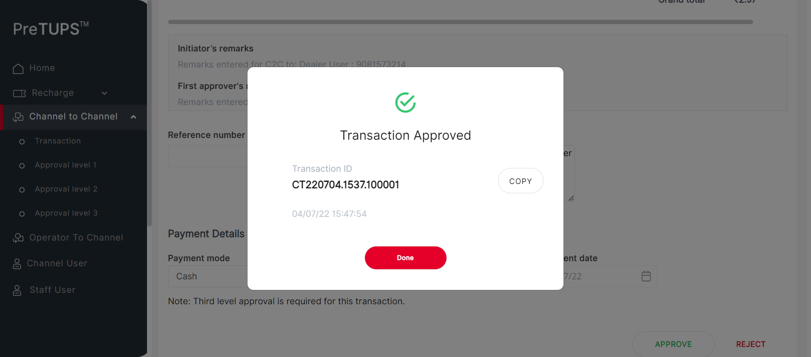
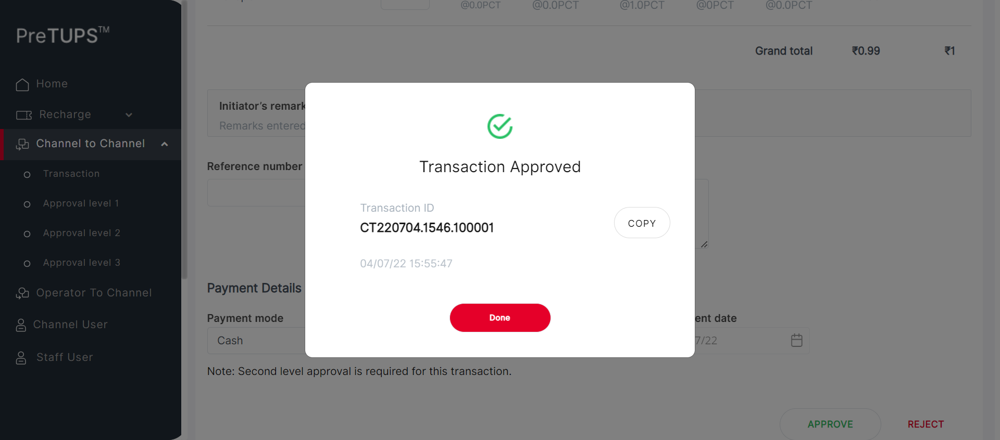
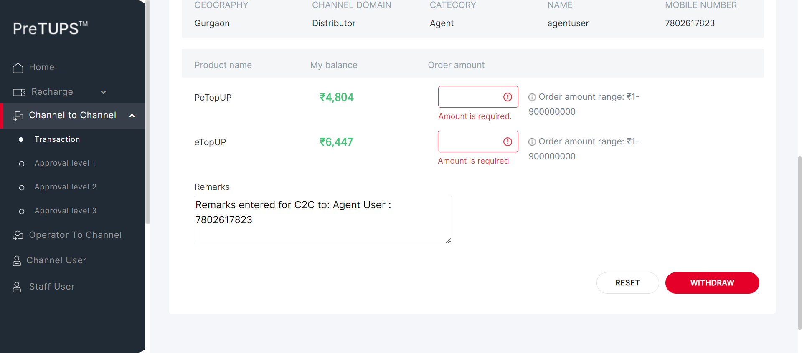
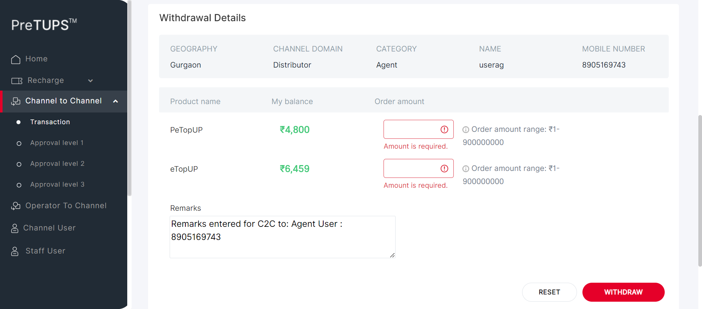
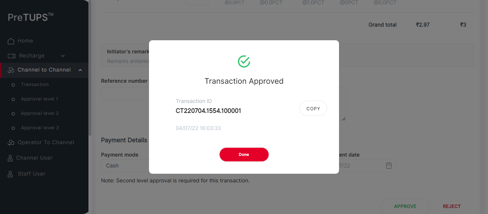
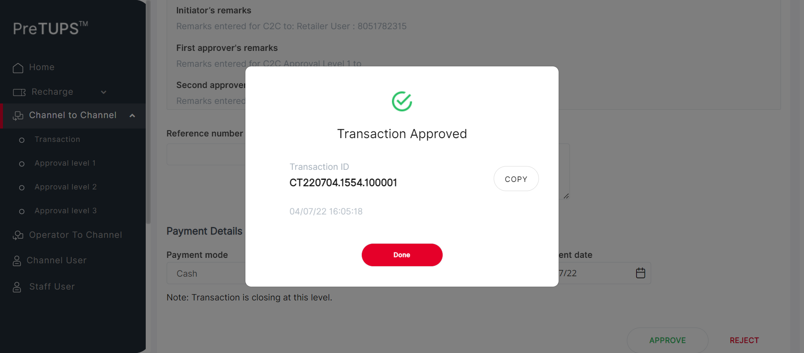
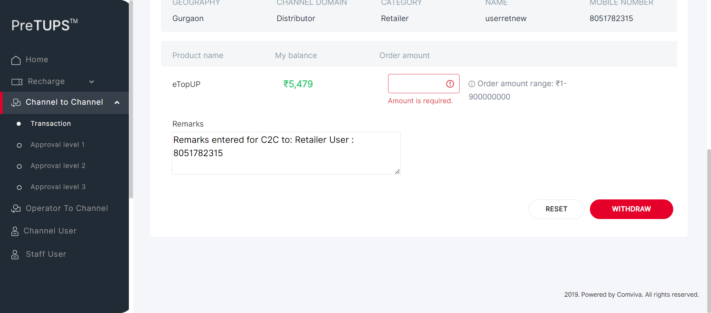

| Status | Timestamp | Details |
|---|---|---|
| info_outline | 3:45:15 PM | Entered getPreference(SE, NG, MAX_APPROVAL_LEVEL_C2C_TRANSFER) |
| info_outline | 3:45:15 PM | Service Class Preference Not Found |
| info_outline | 3:45:15 PM | Trying to get Preference value from Control Preferences |
| info_outline | 3:45:15 PM | Query Repository Returns: DEFAULT_VALUE (3) |
| info_outline | 3:45:15 PM | Category Code for Super Distributor: DIST |
| info_outline | 3:45:15 PM | Entered webInterface(Super Distributor) |
| info_outline | 3:45:15 PM | webInterface() :: select query: Select WEB_INTERFACE_ALLOWED from categories where category_name= ? |
| info_outline | 3:45:15 PM | Database Returns: WEB_INTERFACE_ALLOWED (Y) |
| info_outline | 3:45:15 PM | Exited webInterface() |
| info_outline | 3:45:15 PM | Entered performC2CTransferMobileBuyerType(Super Distributor, Dealer, 9081573214, 2468) |
| info_outline | 3:45:16 PM | Login ID Found as: suser |
| info_outline | 3:45:16 PM | Password Found as: Com@2469 |
| info_outline | 3:45:16 PM | LOGINID : suser |
| info_outline | 3:45:16 PM | LoginID found as: suser |
| info_outline | 3:45:16 PM | Password found as: Com@2469 |
| info_outline | 3:45:16 PM | Username found as: suser |
| info_outline | 3:45:16 PM | Trying to select Language |
| info_outline | 3:45:27 PM | Trying to enter Login ID |
| info_outline | 3:45:27 PM | Login ID entered successfully as: suser |
| info_outline | 3:45:27 PM | Trying to enter Password |
| info_outline | 3:45:27 PM | Password entered successfully as: Com@2469 |
| info_outline | 3:45:27 PM | Trying to click Login Button |
| info_outline | 3:45:27 PM | Login button clicked successfully |
| info_outline | 3:45:27 PM | Error Message Found on Login Screen: |
| info_outline | 3:45:41 PM | Trying clicking on C2C Heading |
| info_outline | 3:45:41 PM | User clicked C2C Heading Link. |
| info_outline | 3:45:41 PM | Trying clicking on C2C Transaction Heading |
| info_outline | 3:45:41 PM | User clicked C2C Transaction Heading Link. |
| info_outline | 3:45:41 PM | C2C Heading and Transaction Heading is clicked |
| info_outline | 3:45:41 PM | Trying clicking on C2C Single Operation Heading |
| info_outline | 3:45:44 PM | User clicked C2C Single Operation Heading. |
| info_outline | 3:45:44 PM | Trying clicking on C2C Transfer Heading |
| info_outline | 3:45:44 PM | User clicked C2C Transfer Heading. |
| info_outline | 3:45:44 PM | Trying clicking on Etopup |
| info_outline | 3:45:44 PM | Clicked Etopup. |
| info_outline | 3:45:44 PM | Trying to select C2C Buyer Type |
| info_outline | 3:45:44 PM | C2C Buyer Type selected : //ng-select[@id='searchBy']//ng-dropdown-panel[contains(@class,'ng-star-inserted')]//span[text()='Mobile Number'] |
| info_outline | 3:45:44 PM | Entering C2C MSISDN |
| info_outline | 3:45:44 PM | Entered C2C MSISDN : 9081573214 |
| info_outline | 3:45:54 PM | Trying clicking on PROCEED button on C2C |
| info_outline | 3:45:57 PM | Clicked PROCEED button on C2C. |
| info_outline | 3:45:57 PM | Trying to initiate C2C Topups |
| info_outline | 3:45:57 PM | rowCount of c2c topups available on screen : 2 |
| info_outline | 3:45:57 PM | sheetProductCode : eTopUP |
| info_outline | 3:45:57 PM | sheetProductCode : PeTopUP |
| info_outline | 3:45:57 PM | quantity : 2 |
| info_outline | 3:45:57 PM | String.valueOf(quantity) SEND KEYS : 2 |
| info_outline | 3:45:58 PM | rowCount of c2c topups available on screen : 2 |
| info_outline | 3:45:58 PM | sheetProductCode : eTopUP |
| info_outline | 3:45:58 PM | quantity : 1 |
| info_outline | 3:45:58 PM | String.valueOf(quantity) SEND KEYS : 1 |
| info_outline | 3:45:58 PM | sheetProductCode : PeTopUP |
| info_outline | 3:45:58 PM | Entered Quantities: |
| info_outline | 3:45:58 PM | Entered Reference Number |
| info_outline | 3:45:58 PM | User entered Remarks |
| info_outline | 3:45:58 PM | Trying to select Payment mode : Cash |
| info_outline | 3:46:01 PM | Selected Payment Mode : Cash |
| info_outline | 3:46:01 PM | Trying to select Payment Instrument Number |
| info_outline | 3:46:02 PM | User entered PaymentInstNum: 124231 |
| info_outline | 3:46:02 PM | Trying to select Date |
| info_outline | 3:46:02 PM | Trying to enter Payment Instrument Date |
| info_outline | 3:46:02 PM | User entered PaymentInstDate: 04/07/22 |
| info_outline | 3:46:02 PM | Trying clicking on C2C TRANSFER button |
| info_outline | 3:46:02 PM | Clicked C2C Transfer Button |
| info_outline | 3:46:04 PM | PIN PopUP is visible. |
| info_outline | 3:46:04 PM | Trying to Enter Channel User PIN for C2C |
| info_outline | 3:46:04 PM | User entered PIN: 2468 |
| info_outline | 3:46:04 PM | Trying clicking on C2C TRANSFER button |
| info_outline | 3:46:04 PM | Clicked C2C Transfer Button |
| info_outline | 3:46:05 PM | PIN PopUP is visible. |
| info_outline | 3:46:05 PM | Fetching C2C Transfer Request Initiated Message |
| info_outline | 3:46:05 PM | C2C Transfer Request Initiated Message : Transfer Request Initiated |
| info_outline | 3:46:05 PM | Trying to get C2C Topups Done |
| info_outline | 3:46:05 PM | C2C [[ChromeDriver: chrome on WINDOWS (7a0082235b0ab55273d24bf3e472f165)] -> xpath: (//label[@class='labelposPrd'])[1]] : [[ChromeDriver: chrome on WINDOWS (7a0082235b0ab55273d24bf3e472f165)] -> xpath: (//label[@class='labelposPrd'])[1]/following-sibling::label] |
| info_outline | 3:46:05 PM | C2C [[ChromeDriver: chrome on WINDOWS (7a0082235b0ab55273d24bf3e472f165)] -> xpath: (//label[@class='labelposPrd'])[2]] : [[ChromeDriver: chrome on WINDOWS (7a0082235b0ab55273d24bf3e472f165)] -> xpath: (//label[@class='labelposPrd'])[2]/following-sibling::label] |
| info_outline | 3:46:05 PM | C2C TOPUPS Done and Info Printed Above |
| info_outline | 3:46:05 PM | C2C Transfer Initiated : Transfer Request Initiated |
| info_outline | 3:46:05 PM | Fetching C2C Transfer Transaction ID |
| info_outline | 3:46:05 PM | C2C Transfer Transaction ID : CT220704.1537.100001 |
| error | 3:46:26 PM | Error while getting SSH Server Instance : com.jcraft.jsch.JSchException: java.net.ConnectException: Connection timed out: connect |
| check_circle | 3:46:26 PM | Catalina Log |
| info_outline | 3:46:26 PM | Trying to Click DONE button after C2C Transfer initiated |
| info_outline | 3:46:27 PM | Clicked Done for Initiated C2C |
| info_outline | 3:46:27 PM | Exited performC2CTransferMobileBuyerType() |
| info_outline | 3:46:27 PM | Entered performC2CTransferMobileBuyerType(Super Distributor, Dealer, 9081573214, 2468) |
| info_outline | 3:46:27 PM | Login ID Found as: suser |
| info_outline | 3:46:27 PM | Password Found as: Com@2469 |
| info_outline | 3:46:27 PM | LOGINID : suser |
| info_outline | 3:46:27 PM | LoginID found as: suser |
| info_outline | 3:46:27 PM | Password found as: Com@2469 |
| info_outline | 3:46:27 PM | Username found as: suser |
| info_outline | 3:46:27 PM | Trying to select Language |
| info_outline | 3:46:37 PM | Trying to enter Login ID |
| info_outline | 3:46:38 PM | Login ID entered successfully as: suser |
| info_outline | 3:46:38 PM | Trying to enter Password |
| info_outline | 3:46:38 PM | Password entered successfully as: Com@2469 |
| info_outline | 3:46:38 PM | Trying to click Login Button |
| info_outline | 3:46:38 PM | Login button clicked successfully |
| info_outline | 3:46:38 PM | Error Message Found on Login Screen: |
| info_outline | 3:46:47 PM | Trying clicking on C2C Heading |
| info_outline | 3:46:47 PM | User clicked C2C Heading Link. |
| info_outline | 3:46:47 PM | Trying clicking on C2C Approval Level 1 Heading |
| info_outline | 3:46:47 PM | User clicked C2C Approval Level 1 Heading Link. |
| info_outline | 3:46:47 PM | C2C Heading and Transaction Heading is clicked |
| info_outline | 3:46:47 PM | Waiting for spinner |
| info_outline | 3:46:49 PM | Waiting for spinner to stop |
| info_outline | 3:46:51 PM | Spinner stopped |
| info_outline | 3:46:51 PM | Trying clicking on C2C Single Operation Heading |
| info_outline | 3:46:51 PM | User clicked C2C Single Operation Heading. |
| info_outline | 3:46:51 PM | Trying clicking on etopUp Heading |
| info_outline | 3:46:51 PM | User clicked eTopup Heading Link. |
| info_outline | 3:46:51 PM | Trying to enter the TransactionId |
| info_outline | 3:46:51 PM | Entered the TransactionId |
| info_outline | 3:46:51 PM | Trying to Click the approve button |
| info_outline | 3:46:52 PM | User clicked Approve Button . |
| info_outline | 3:46:52 PM | Trying to enter the remarks |
| info_outline | 3:46:52 PM | Entered the TransactionId |
| info_outline | 3:46:54 PM | Trying to Click the approve button |
| info_outline | 3:46:54 PM | User clicked Approve Button . |
| info_outline | 3:46:55 PM | Trying to Click the yes button |
| info_outline | 3:47:00 PM | User clicked Yes Button. |
| info_outline | 3:47:02 PM | PopUP is visible. |
| info_outline | 3:47:02 PM | Trying to get the Success Msg |
| info_outline | 3:47:02 PM | Successfully Retrieved Success Msg |
| info_outline | 3:47:02 PM | Expected: Transaction Approved |
| info_outline | 3:47:02 PM | Message Validation Success |
| info_outline | 3:47:02 PM | |
| info_outline | 3:47:02 PM | Transaction Approved : Transaction Approved |
| info_outline | 3:47:02 PM | Trying to get the TxndID |
| info_outline | 3:47:02 PM | Successfully retrieved TxnId |
| error | 3:47:23 PM | Error while getting SSH Server Instance : com.jcraft.jsch.JSchException: java.net.ConnectException: Connection timed out: connect |
| check_circle | 3:47:23 PM | Catalina Log |
| info_outline | 3:47:23 PM | Trying to click Done Button |
| info_outline | 3:47:23 PM | Done Button successfully clicked |
| info_outline | 3:47:23 PM | Entered performC2CTransferMobileBuyerType(Super Distributor, Dealer, 9081573214, 2468) |
| info_outline | 3:47:23 PM | Login ID Found as: suser |
| info_outline | 3:47:23 PM | Password Found as: Com@2469 |
| info_outline | 3:47:23 PM | LOGINID : suser |
| info_outline | 3:47:23 PM | LoginID found as: suser |
| info_outline | 3:47:23 PM | Password found as: Com@2469 |
| info_outline | 3:47:23 PM | Username found as: suser |
| info_outline | 3:47:24 PM | Trying to select Language |
| info_outline | 3:47:34 PM | Trying to enter Login ID |
| info_outline | 3:47:34 PM | Login ID entered successfully as: suser |
| info_outline | 3:47:34 PM | Trying to enter Password |
| info_outline | 3:47:35 PM | Password entered successfully as: Com@2469 |
| info_outline | 3:47:35 PM | Trying to click Login Button |
| info_outline | 3:47:35 PM | Login button clicked successfully |
| info_outline | 3:47:35 PM | Error Message Found on Login Screen: |
| info_outline | 3:47:44 PM | Trying clicking on C2C Heading |
| info_outline | 3:47:44 PM | User clicked C2C Heading Link. |
| info_outline | 3:47:44 PM | Trying clicking on C2C Approval Level 2 Heading |
| info_outline | 3:47:44 PM | User clicked C2C Approval Level 2 Heading Link. |
| info_outline | 3:47:44 PM | C2C Heading and Transaction Heading is clicked |
| info_outline | 3:47:44 PM | Waiting for spinner |
| info_outline | 3:47:44 PM | Waiting for spinner to stop |
| info_outline | 3:47:46 PM | Spinner stopped |
| info_outline | 3:47:46 PM | Trying clicking on C2C Single Operation Heading |
| info_outline | 3:47:46 PM | User clicked C2C Single Operation Heading. |
| info_outline | 3:47:46 PM | Trying clicking on etopUp Heading |
| info_outline | 3:47:46 PM | User clicked eTopup Heading Link. |
| info_outline | 3:47:46 PM | Trying to enter the TransactionId |
| info_outline | 3:47:47 PM | Entered the TransactionId |
| info_outline | 3:47:47 PM | Trying to Click the approve button |
| info_outline | 3:47:47 PM | User clicked Approve Button . |
| info_outline | 3:47:47 PM | Trying to enter the remarks |
| info_outline | 3:47:47 PM | Entered the TransactionId |
| info_outline | 3:47:48 PM | Trying to Click the approve button |
| info_outline | 3:47:48 PM | User clicked Approve Button . |
| info_outline | 3:47:49 PM | Trying to Click the yes button |
| info_outline | 3:47:54 PM | User clicked Yes Button. |
| info_outline | 3:47:55 PM | PopUP is visible. |
| info_outline | 3:47:55 PM | Trying to get the Success Msg |
| info_outline | 3:47:55 PM | Successfully Retrieved Success Msg |
| info_outline | 3:47:55 PM | Expected: Transaction Approved |
| info_outline | 3:47:55 PM | Message Validation Success |
| info_outline | 3:47:56 PM |  |
| info_outline | 3:47:56 PM | Transaction Approved : Transaction Approved |
| info_outline | 3:47:56 PM | Trying to get the TxndID |
| info_outline | 3:47:56 PM | Successfully retrieved TxnId |
| error | 3:48:17 PM | Error while getting SSH Server Instance : com.jcraft.jsch.JSchException: java.net.ConnectException: Connection timed out: connect |
| check_circle | 3:48:17 PM | Catalina Log |
| info_outline | 3:48:17 PM | Trying to click Done Button |
| info_outline | 3:48:17 PM | Done Button successfully clicked |
| info_outline | 3:48:17 PM | Entered performC2CTransferMobileBuyerType(Super Distributor, Dealer, 9081573214, 2468) |
| info_outline | 3:48:17 PM | Login ID Found as: suser |
| info_outline | 3:48:17 PM | Password Found as: Com@2469 |
| info_outline | 3:48:17 PM | LOGINID : suser |
| info_outline | 3:48:17 PM | LoginID found as: suser |
| info_outline | 3:48:17 PM | Password found as: Com@2469 |
| info_outline | 3:48:17 PM | Username found as: suser |
| info_outline | 3:48:17 PM | Trying to select Language |
| info_outline | 3:48:28 PM | Trying to enter Login ID |
| info_outline | 3:48:28 PM | Login ID entered successfully as: suser |
| info_outline | 3:48:28 PM | Trying to enter Password |
| info_outline | 3:48:28 PM | Password entered successfully as: Com@2469 |
| info_outline | 3:48:28 PM | Trying to click Login Button |
| info_outline | 3:48:28 PM | Login button clicked successfully |
| info_outline | 3:48:28 PM | Error Message Found on Login Screen: |
| info_outline | 3:48:39 PM | Trying clicking on C2C Heading |
| info_outline | 3:48:39 PM | User clicked C2C Heading Link. |
| info_outline | 3:48:39 PM | Trying clicking on C2C Approval Level 3 Heading |
| info_outline | 3:48:39 PM | User clicked C2C Approval Level 3 Heading Link. |
| info_outline | 3:48:39 PM | C2C Heading and Transaction Heading is clicked |
| info_outline | 3:48:39 PM | Waiting for spinner |
| info_outline | 3:48:39 PM | Waiting for spinner to stop |
| info_outline | 3:48:41 PM | Spinner stopped |
| info_outline | 3:48:41 PM | Trying clicking on C2C Single Operation Heading |
| info_outline | 3:48:41 PM | User clicked C2C Single Operation Heading. |
| info_outline | 3:48:41 PM | Trying clicking on etopUp Heading |
| info_outline | 3:48:41 PM | User clicked eTopup Heading Link. |
| info_outline | 3:48:41 PM | Trying to enter the TransactionId |
| info_outline | 3:48:41 PM | Entered the TransactionId |
| info_outline | 3:48:41 PM | Trying to Click the approve button |
| info_outline | 3:48:41 PM | User clicked Approve Button . |
| info_outline | 3:48:41 PM | Trying to enter the remarks |
| info_outline | 3:48:42 PM | Entered the TransactionId |
| info_outline | 3:48:43 PM | Trying to Click the approve button |
| info_outline | 3:48:43 PM | User clicked Approve Button . |
| info_outline | 3:48:44 PM | Trying to Click the yes button |
| cancel | 3:49:09 PM | org.openqa.selenium.TimeoutException: Expected condition failed: waiting for visibility of element located by By.xpath: //button[@id='confirmApproval1'] (tried for 20 second(s) with 500 milliseconds interval) at org.openqa.selenium.support.ui.WebDriverWait.timeoutException(WebDriverWait.java:82) at org.openqa.selenium.support.ui.FluentWait.until(FluentWait.java:272) at angular.pageobjects.c2capproval.C2CApproval.clickYes(C2CApproval.java:170) at angular.feature.C2CTransferRevamp.performingLevel3Approval(C2CTransferRevamp.java:1086) at angular.testscripts.prereuisitesangular.PreRequisite_C2CWithdrawal_Revamp.A_01_Test_C2CWithdrawlMobileBuyerType(PreRequisite_C2CWithdrawal_Revamp.java:68) at sun.reflect.NativeMethodAccessorImpl.invoke0(Native Method) at sun.reflect.NativeMethodAccessorImpl.invoke(Unknown Source) at sun.reflect.DelegatingMethodAccessorImpl.invoke(Unknown Source) at java.lang.reflect.Method.invoke(Unknown Source) at org.testng.internal.MethodInvocationHelper.invokeMethod(MethodInvocationHelper.java:124) at org.testng.internal.Invoker.invokeMethod(Invoker.java:580) at org.testng.internal.Invoker.invokeTestMethod(Invoker.java:716) at org.testng.internal.Invoker.invokeTestMethods(Invoker.java:988) at org.testng.internal.TestMethodWorker.invokeTestMethods(TestMethodWorker.java:125) at org.testng.internal.TestMethodWorker.run(TestMethodWorker.java:109) at org.testng.TestRunner.privateRun(TestRunner.java:648) at org.testng.TestRunner.run(TestRunner.java:505) at org.testng.SuiteRunner.runTest(SuiteRunner.java:455) at org.testng.SuiteRunner.runSequentially(SuiteRunner.java:450) at org.testng.SuiteRunner.privateRun(SuiteRunner.java:415) at org.testng.SuiteRunner.run(SuiteRunner.java:364) at org.testng.SuiteRunnerWorker.runSuite(SuiteRunnerWorker.java:52) at org.testng.SuiteRunnerWorker.run(SuiteRunnerWorker.java:84) at org.testng.TestNG.runSuitesSequentially(TestNG.java:1208) at org.testng.TestNG.runSuitesLocally(TestNG.java:1137) at org.testng.TestNG.runSuites(TestNG.java:1049) at org.testng.TestNG.run(TestNG.java:1017) at org.testng.remote.AbstractRemoteTestNG.run(AbstractRemoteTestNG.java:115) at org.testng.remote.RemoteTestNG.initAndRun(RemoteTestNG.java:251) at org.testng.remote.RemoteTestNG.main(RemoteTestNG.java:77) Caused by: org.openqa.selenium.NoSuchElementException: Cannot locate an element using By.xpath: //button[@id='confirmApproval1'] For documentation on this error, please visit: http://seleniumhq.org/exceptions/no_such_element.html Build info: version: '3.10.0', revision: '176b4a9', time: '2018-03-02T19:03:16.397Z' System info: host: 'MCKL-20005142', ip: '192.168.1.40', os.name: 'Windows 10', os.arch: 'amd64', os.version: '10.0', java.version: '1.8.0_291' Driver info: driver.version: unknown at org.openqa.selenium.support.ui.ExpectedConditions.lambda$findElement$0(ExpectedConditions.java:896) at java.util.Optional.orElseThrow(Unknown Source) at org.openqa.selenium.support.ui.ExpectedConditions.findElement(ExpectedConditions.java:895) at org.openqa.selenium.support.ui.ExpectedConditions.access$000(ExpectedConditions.java:44) at org.openqa.selenium.support.ui.ExpectedConditions$7.apply(ExpectedConditions.java:206) at org.openqa.selenium.support.ui.ExpectedConditions$7.apply(ExpectedConditions.java:202) at org.openqa.selenium.support.ui.FluentWait.until(FluentWait.java:249) ... 28 more |
| error | 3:49:30 PM | Error while getting SSH Server Instance : com.jcraft.jsch.JSchException: java.net.ConnectException: Connection timed out: connect |
| cancel | 3:49:30 PM | Catalina Log |
| Status | Timestamp | Details |
|---|---|---|
| info_outline | 3:49:31 PM | Entered getPreference(AG, NG, MAX_APPROVAL_LEVEL_C2C_TRANSFER) |
| info_outline | 3:49:31 PM | Service Class Preference Not Found |
| info_outline | 3:49:31 PM | Trying to get Preference value from Control Preferences |
| info_outline | 3:49:31 PM | Query Repository Returns: DEFAULT_VALUE (0) |
| info_outline | 3:49:31 PM | Category Code for Super Distributor: DIST |
| info_outline | 3:49:31 PM | Entered webInterface(Super Distributor) |
| info_outline | 3:49:31 PM | webInterface() :: select query: Select WEB_INTERFACE_ALLOWED from categories where category_name= ? |
| info_outline | 3:49:32 PM | Database Returns: WEB_INTERFACE_ALLOWED (Y) |
| info_outline | 3:49:32 PM | Exited webInterface() |
| info_outline | 3:49:32 PM | Entered performC2CTransferMobileBuyerType(Super Distributor, Agent, 7802617823, 2468) |
| info_outline | 3:49:32 PM | Login ID Found as: suser |
| info_outline | 3:49:32 PM | Password Found as: Com@2469 |
| info_outline | 3:49:32 PM | LOGINID : suser |
| info_outline | 3:49:32 PM | LoginID found as: suser |
| info_outline | 3:49:32 PM | Password found as: Com@2469 |
| info_outline | 3:49:32 PM | Username found as: suser |
| info_outline | 3:49:32 PM | Trying to select Language |
| info_outline | 3:49:42 PM | Trying to enter Login ID |
| info_outline | 3:49:42 PM | Login ID entered successfully as: suser |
| info_outline | 3:49:42 PM | Trying to enter Password |
| info_outline | 3:49:43 PM | Password entered successfully as: Com@2469 |
| info_outline | 3:49:43 PM | Trying to click Login Button |
| info_outline | 3:49:43 PM | Login button clicked successfully |
| info_outline | 3:49:43 PM | Error Message Found on Login Screen: |
| info_outline | 3:49:53 PM | Trying clicking on C2C Heading |
| info_outline | 3:49:53 PM | User clicked C2C Heading Link. |
| info_outline | 3:49:53 PM | Trying clicking on C2C Transaction Heading |
| info_outline | 3:49:53 PM | User clicked C2C Transaction Heading Link. |
| info_outline | 3:49:53 PM | C2C Heading and Transaction Heading is clicked |
| info_outline | 3:49:53 PM | Trying clicking on C2C Single Operation Heading |
| info_outline | 3:49:53 PM | User clicked C2C Single Operation Heading. |
| info_outline | 3:49:53 PM | Trying clicking on C2C Transfer Heading |
| info_outline | 3:49:54 PM | User clicked C2C Transfer Heading. |
| info_outline | 3:49:54 PM | Trying clicking on Etopup |
| info_outline | 3:49:54 PM | Clicked Etopup. |
| info_outline | 3:49:54 PM | Trying to select C2C Buyer Type |
| info_outline | 3:49:54 PM | C2C Buyer Type selected : //ng-select[@id='searchBy']//ng-dropdown-panel[contains(@class,'ng-star-inserted')]//span[text()='Mobile Number'] |
| info_outline | 3:49:54 PM | Entering C2C MSISDN |
| info_outline | 3:49:54 PM | Entered C2C MSISDN : 7802617823 |
| info_outline | 3:50:04 PM | Trying clicking on PROCEED button on C2C |
| info_outline | 3:50:06 PM | Clicked PROCEED button on C2C. |
| info_outline | 3:50:06 PM | Trying to initiate C2C Topups |
| info_outline | 3:50:06 PM | rowCount of c2c topups available on screen : 2 |
| info_outline | 3:50:06 PM | sheetProductCode : eTopUP |
| info_outline | 3:50:06 PM | sheetProductCode : PeTopUP |
| info_outline | 3:50:06 PM | quantity : 2 |
| info_outline | 3:50:07 PM | String.valueOf(quantity) SEND KEYS : 2 |
| info_outline | 3:50:07 PM | rowCount of c2c topups available on screen : 2 |
| info_outline | 3:50:07 PM | sheetProductCode : eTopUP |
| info_outline | 3:50:07 PM | quantity : 1 |
| info_outline | 3:50:07 PM | String.valueOf(quantity) SEND KEYS : 1 |
| info_outline | 3:50:07 PM | sheetProductCode : PeTopUP |
| info_outline | 3:50:07 PM | Entered Quantities: |
| info_outline | 3:50:07 PM | Entered Reference Number |
| info_outline | 3:50:07 PM | User entered Remarks |
| info_outline | 3:50:07 PM | Trying to select Payment mode : Cash |
| info_outline | 3:50:10 PM | Selected Payment Mode : Cash |
| info_outline | 3:50:10 PM | Trying to select Payment Instrument Number |
| info_outline | 3:50:10 PM | User entered PaymentInstNum: 124231 |
| info_outline | 3:50:10 PM | Trying to select Date |
| info_outline | 3:50:10 PM | Trying to enter Payment Instrument Date |
| info_outline | 3:50:10 PM | User entered PaymentInstDate: 04/07/22 |
| info_outline | 3:50:10 PM | Trying clicking on C2C TRANSFER button |
| info_outline | 3:50:11 PM | Clicked C2C Transfer Button |
| info_outline | 3:50:12 PM | PIN PopUP is visible. |
| info_outline | 3:50:12 PM | Trying to Enter Channel User PIN for C2C |
| info_outline | 3:50:12 PM | User entered PIN: 2468 |
| info_outline | 3:50:12 PM | Trying clicking on C2C TRANSFER button |
| info_outline | 3:50:12 PM | Clicked C2C Transfer Button |
| info_outline | 3:50:13 PM | PIN PopUP is visible. |
| info_outline | 3:50:13 PM | Fetching C2C Transfer Request Initiated Message |
| info_outline | 3:50:13 PM | C2C Transfer Request Initiated Message : Transfer Request Initiated |
| info_outline | 3:50:13 PM | Trying to get C2C Topups Done |
| info_outline | 3:50:13 PM | C2C [[ChromeDriver: chrome on WINDOWS (7a0082235b0ab55273d24bf3e472f165)] -> xpath: (//label[@class='labelposPrd'])[1]] : [[ChromeDriver: chrome on WINDOWS (7a0082235b0ab55273d24bf3e472f165)] -> xpath: (//label[@class='labelposPrd'])[1]/following-sibling::label] |
| info_outline | 3:50:13 PM | C2C [[ChromeDriver: chrome on WINDOWS (7a0082235b0ab55273d24bf3e472f165)] -> xpath: (//label[@class='labelposPrd'])[2]] : [[ChromeDriver: chrome on WINDOWS (7a0082235b0ab55273d24bf3e472f165)] -> xpath: (//label[@class='labelposPrd'])[2]/following-sibling::label] |
| info_outline | 3:50:13 PM | C2C TOPUPS Done and Info Printed Above |
| info_outline | 3:50:13 PM | C2C Transfer Initiated : Transfer Request Initiated |
| info_outline | 3:50:13 PM | Fetching C2C Transfer Transaction ID |
| info_outline | 3:50:13 PM | C2C Transfer Transaction ID : CT220704.1542.100001 |
| error | 3:50:34 PM | Error while getting SSH Server Instance : com.jcraft.jsch.JSchException: java.net.ConnectException: Connection timed out: connect |
| check_circle | 3:50:34 PM | Catalina Log |
| info_outline | 3:50:34 PM | Trying to Click DONE button after C2C Transfer initiated |
| info_outline | 3:50:34 PM | Clicked Done for Initiated C2C |
| info_outline | 3:50:34 PM | Exited performC2CTransferMobileBuyerType() |
| info_outline | 3:50:34 PM | C2C vocuher transfer Approval is perform at c2c transfer itself |
| info_outline | 3:50:34 PM | Entered performC2CWithdrawalMobileBuyerType(Super Distributor, Agent, 7802617823, 2468) |
| info_outline | 3:50:35 PM | Login ID Found as: suser |
| info_outline | 3:50:35 PM | Password Found as: Com@2469 |
| info_outline | 3:50:35 PM | LOGINID : suser |
| info_outline | 3:50:35 PM | LoginID found as: suser |
| info_outline | 3:50:35 PM | Password found as: Com@2469 |
| info_outline | 3:50:35 PM | Username found as: suser |
| info_outline | 3:50:35 PM | Trying to select Language |
| info_outline | 3:50:45 PM | Trying to enter Login ID |
| info_outline | 3:50:46 PM | Login ID entered successfully as: suser |
| info_outline | 3:50:46 PM | Trying to enter Password |
| info_outline | 3:50:46 PM | Password entered successfully as: Com@2469 |
| info_outline | 3:50:46 PM | Trying to click Login Button |
| info_outline | 3:50:46 PM | Login button clicked successfully |
| info_outline | 3:50:46 PM | Error Message Found on Login Screen: |
| info_outline | 3:50:56 PM | Trying clicking on C2C Heading |
| info_outline | 3:50:56 PM | User clicked C2C Heading Link. |
| info_outline | 3:50:56 PM | Trying clicking on C2C Transaction Heading |
| info_outline | 3:50:57 PM | User clicked C2C Transaction Heading Link. |
| info_outline | 3:50:57 PM | C2C Heading and Transaction Heading is clicked |
| info_outline | 3:50:57 PM | Trying clicking on C2C Withdrawal Heading |
| info_outline | 3:50:57 PM | User clicked C2C Withdrawal Heading. |
| info_outline | 3:50:57 PM | Trying to select C2C Buyer Type |
| info_outline | 3:50:57 PM | C2C Buyer Type selected : //ng-select[@id='searchBy']//ng-dropdown-panel[contains(@class,'ng-star-inserted')]//span[text()='Mobile Number'] |
| info_outline | 3:50:57 PM | Entering C2C MSISDN |
| info_outline | 3:50:57 PM | Entered C2C MSISDN : 7802617823 |
| info_outline | 3:51:07 PM | Trying clicking on PROCEED button on C2C |
| info_outline | 3:51:09 PM | Clicked PROCEED button on C2C. |
| info_outline | 3:51:09 PM | Trying to initiate C2C Topups |
| cancel | 3:51:29 PM | org.openqa.selenium.TimeoutException: Expected condition failed: waiting for visibility of element located by By.xpath: //label[@class='denoTableHeader'] (tried for 20 second(s) with 500 milliseconds interval) at org.openqa.selenium.support.ui.WebDriverWait.timeoutException(WebDriverWait.java:82) at org.openqa.selenium.support.ui.FluentWait.until(FluentWait.java:272) at angular.pageobjects.c2ctransfer.C2CTransfers.enterQuantityforC2CWithdrawlRevamp(C2CTransfers.java:1087) at angular.feature.C2CTransferRevamp.performC2CWithdrawalMobileBuyerType(C2CTransferRevamp.java:1233) at angular.testscripts.prereuisitesangular.PreRequisite_C2CWithdrawal_Revamp.A_01_Test_C2CWithdrawlMobileBuyerType(PreRequisite_C2CWithdrawal_Revamp.java:71) at sun.reflect.NativeMethodAccessorImpl.invoke0(Native Method) at sun.reflect.NativeMethodAccessorImpl.invoke(Unknown Source) at sun.reflect.DelegatingMethodAccessorImpl.invoke(Unknown Source) at java.lang.reflect.Method.invoke(Unknown Source) at org.testng.internal.MethodInvocationHelper.invokeMethod(MethodInvocationHelper.java:124) at org.testng.internal.Invoker.invokeMethod(Invoker.java:580) at org.testng.internal.Invoker.invokeTestMethod(Invoker.java:716) at org.testng.internal.Invoker.invokeTestMethods(Invoker.java:988) at org.testng.internal.TestMethodWorker.invokeTestMethods(TestMethodWorker.java:125) at org.testng.internal.TestMethodWorker.run(TestMethodWorker.java:109) at org.testng.TestRunner.privateRun(TestRunner.java:648) at org.testng.TestRunner.run(TestRunner.java:505) at org.testng.SuiteRunner.runTest(SuiteRunner.java:455) at org.testng.SuiteRunner.runSequentially(SuiteRunner.java:450) at org.testng.SuiteRunner.privateRun(SuiteRunner.java:415) at org.testng.SuiteRunner.run(SuiteRunner.java:364) at org.testng.SuiteRunnerWorker.runSuite(SuiteRunnerWorker.java:52) at org.testng.SuiteRunnerWorker.run(SuiteRunnerWorker.java:84) at org.testng.TestNG.runSuitesSequentially(TestNG.java:1208) at org.testng.TestNG.runSuitesLocally(TestNG.java:1137) at org.testng.TestNG.runSuites(TestNG.java:1049) at org.testng.TestNG.run(TestNG.java:1017) at org.testng.remote.AbstractRemoteTestNG.run(AbstractRemoteTestNG.java:115) at org.testng.remote.RemoteTestNG.initAndRun(RemoteTestNG.java:251) at org.testng.remote.RemoteTestNG.main(RemoteTestNG.java:77) Caused by: org.openqa.selenium.NoSuchElementException: Cannot locate an element using By.xpath: //label[@class='denoTableHeader'] For documentation on this error, please visit: http://seleniumhq.org/exceptions/no_such_element.html Build info: version: '3.10.0', revision: '176b4a9', time: '2018-03-02T19:03:16.397Z' System info: host: 'MCKL-20005142', ip: '192.168.1.40', os.name: 'Windows 10', os.arch: 'amd64', os.version: '10.0', java.version: '1.8.0_291' Driver info: driver.version: unknown at org.openqa.selenium.support.ui.ExpectedConditions.lambda$findElement$0(ExpectedConditions.java:896) at java.util.Optional.orElseThrow(Unknown Source) at org.openqa.selenium.support.ui.ExpectedConditions.findElement(ExpectedConditions.java:895) at org.openqa.selenium.support.ui.ExpectedConditions.access$000(ExpectedConditions.java:44) at org.openqa.selenium.support.ui.ExpectedConditions$7.apply(ExpectedConditions.java:206) at org.openqa.selenium.support.ui.ExpectedConditions$7.apply(ExpectedConditions.java:202) at org.openqa.selenium.support.ui.FluentWait.until(FluentWait.java:249) ... 28 more |
| error | 3:51:50 PM | Error while getting SSH Server Instance : com.jcraft.jsch.JSchException: java.net.ConnectException: Connection timed out: connect |
| cancel | 3:51:50 PM | Catalina Log |
| Status | Timestamp | Details |
|---|---|---|
| info_outline | 3:51:51 PM | Entered getPreference(AG, NG, MAX_APPROVAL_LEVEL_C2C_TRANSFER) |
| info_outline | 3:51:51 PM | Service Class Preference Not Found |
| info_outline | 3:51:51 PM | Trying to get Preference value from Control Preferences |
| info_outline | 3:51:51 PM | Query Repository Returns: DEFAULT_VALUE (0) |
| info_outline | 3:51:51 PM | Category Code for Super Distributor: DIST |
| info_outline | 3:51:51 PM | Entered webInterface(Super Distributor) |
| info_outline | 3:51:51 PM | webInterface() :: select query: Select WEB_INTERFACE_ALLOWED from categories where category_name= ? |
| info_outline | 3:51:51 PM | Database Returns: WEB_INTERFACE_ALLOWED (Y) |
| info_outline | 3:51:51 PM | Exited webInterface() |
| info_outline | 3:51:51 PM | Entered performC2CTransferMobileBuyerType(Super Distributor, Agent, 8905169743, 2468) |
| info_outline | 3:51:51 PM | Login ID Found as: suser |
| info_outline | 3:51:51 PM | Password Found as: Com@2469 |
| info_outline | 3:51:51 PM | LOGINID : suser |
| info_outline | 3:51:52 PM | LoginID found as: suser |
| info_outline | 3:51:52 PM | Password found as: Com@2469 |
| info_outline | 3:51:52 PM | Username found as: suser |
| info_outline | 3:51:52 PM | Trying to select Language |
| info_outline | 3:52:02 PM | Trying to enter Login ID |
| info_outline | 3:52:02 PM | Login ID entered successfully as: suser |
| info_outline | 3:52:02 PM | Trying to enter Password |
| info_outline | 3:52:03 PM | Password entered successfully as: Com@2469 |
| info_outline | 3:52:03 PM | Trying to click Login Button |
| info_outline | 3:52:03 PM | Login button clicked successfully |
| info_outline | 3:52:03 PM | Error Message Found on Login Screen: |
| info_outline | 3:52:12 PM | Trying clicking on C2C Heading |
| info_outline | 3:52:12 PM | User clicked C2C Heading Link. |
| info_outline | 3:52:12 PM | Trying clicking on C2C Transaction Heading |
| info_outline | 3:52:12 PM | User clicked C2C Transaction Heading Link. |
| info_outline | 3:52:12 PM | C2C Heading and Transaction Heading is clicked |
| info_outline | 3:52:12 PM | Trying clicking on C2C Single Operation Heading |
| info_outline | 3:52:12 PM | User clicked C2C Single Operation Heading. |
| info_outline | 3:52:12 PM | Trying clicking on C2C Transfer Heading |
| info_outline | 3:52:12 PM | User clicked C2C Transfer Heading. |
| info_outline | 3:52:12 PM | Trying clicking on Etopup |
| info_outline | 3:52:13 PM | Clicked Etopup. |
| info_outline | 3:52:13 PM | Trying to select C2C Buyer Type |
| info_outline | 3:52:13 PM | C2C Buyer Type selected : //ng-select[@id='searchBy']//ng-dropdown-panel[contains(@class,'ng-star-inserted')]//span[text()='Mobile Number'] |
| info_outline | 3:52:13 PM | Entering C2C MSISDN |
| info_outline | 3:52:13 PM | Entered C2C MSISDN : 8905169743 |
| info_outline | 3:52:23 PM | Trying clicking on PROCEED button on C2C |
| info_outline | 3:52:25 PM | Clicked PROCEED button on C2C. |
| info_outline | 3:52:25 PM | Trying to initiate C2C Topups |
| info_outline | 3:52:25 PM | rowCount of c2c topups available on screen : 2 |
| info_outline | 3:52:25 PM | sheetProductCode : eTopUP |
| info_outline | 3:52:25 PM | sheetProductCode : PeTopUP |
| info_outline | 3:52:25 PM | quantity : 2 |
| info_outline | 3:52:25 PM | String.valueOf(quantity) SEND KEYS : 2 |
| info_outline | 3:52:26 PM | rowCount of c2c topups available on screen : 2 |
| info_outline | 3:52:26 PM | sheetProductCode : eTopUP |
| info_outline | 3:52:26 PM | quantity : 1 |
| info_outline | 3:52:26 PM | String.valueOf(quantity) SEND KEYS : 1 |
| info_outline | 3:52:26 PM | sheetProductCode : PeTopUP |
| info_outline | 3:52:26 PM | Entered Quantities: |
| info_outline | 3:52:26 PM | Entered Reference Number |
| info_outline | 3:52:26 PM | User entered Remarks |
| info_outline | 3:52:26 PM | Trying to select Payment mode : Cash |
| info_outline | 3:52:29 PM | Selected Payment Mode : Cash |
| info_outline | 3:52:29 PM | Trying to select Payment Instrument Number |
| info_outline | 3:52:30 PM | User entered PaymentInstNum: 124231 |
| info_outline | 3:52:30 PM | Trying to select Date |
| info_outline | 3:52:30 PM | Trying to enter Payment Instrument Date |
| info_outline | 3:52:30 PM | User entered PaymentInstDate: 04/07/22 |
| info_outline | 3:52:30 PM | Trying clicking on C2C TRANSFER button |
| info_outline | 3:52:30 PM | Clicked C2C Transfer Button |
| info_outline | 3:52:31 PM | PIN PopUP is visible. |
| info_outline | 3:52:31 PM | Trying to Enter Channel User PIN for C2C |
| info_outline | 3:52:31 PM | User entered PIN: 2468 |
| info_outline | 3:52:31 PM | Trying clicking on C2C TRANSFER button |
| info_outline | 3:52:31 PM | Clicked C2C Transfer Button |
| info_outline | 3:52:32 PM | PIN PopUP is visible. |
| info_outline | 3:52:32 PM | Fetching C2C Transfer Request Initiated Message |
| info_outline | 3:52:33 PM | C2C Transfer Request Initiated Message : Transfer Request Initiated |
| info_outline | 3:52:33 PM | Trying to get C2C Topups Done |
| info_outline | 3:52:33 PM | C2C [[ChromeDriver: chrome on WINDOWS (7a0082235b0ab55273d24bf3e472f165)] -> xpath: (//label[@class='labelposPrd'])[1]] : [[ChromeDriver: chrome on WINDOWS (7a0082235b0ab55273d24bf3e472f165)] -> xpath: (//label[@class='labelposPrd'])[1]/following-sibling::label] |
| info_outline | 3:52:33 PM | C2C [[ChromeDriver: chrome on WINDOWS (7a0082235b0ab55273d24bf3e472f165)] -> xpath: (//label[@class='labelposPrd'])[2]] : [[ChromeDriver: chrome on WINDOWS (7a0082235b0ab55273d24bf3e472f165)] -> xpath: (//label[@class='labelposPrd'])[2]/following-sibling::label] |
| info_outline | 3:52:33 PM | C2C TOPUPS Done and Info Printed Above |
| info_outline | 3:52:33 PM | C2C Transfer Initiated : Transfer Request Initiated |
| info_outline | 3:52:33 PM | Fetching C2C Transfer Transaction ID |
| info_outline | 3:52:33 PM | C2C Transfer Transaction ID : CT220704.1544.100001 |
| error | 3:52:54 PM | Error while getting SSH Server Instance : com.jcraft.jsch.JSchException: java.net.ConnectException: Connection timed out: connect |
| check_circle | 3:52:54 PM | Catalina Log |
| info_outline | 3:52:54 PM | Trying to Click DONE button after C2C Transfer initiated |
| info_outline | 3:52:54 PM | Clicked Done for Initiated C2C |
| info_outline | 3:52:54 PM | Exited performC2CTransferMobileBuyerType() |
| info_outline | 3:52:54 PM | C2C vocuher transfer Approval is perform at c2c transfer itself |
| info_outline | 3:52:54 PM | Entered performC2CWithdrawalMobileBuyerType(Super Distributor, Agent, 8905169743, 2468) |
| info_outline | 3:52:54 PM | Login ID Found as: suser |
| info_outline | 3:52:54 PM | Password Found as: Com@2469 |
| info_outline | 3:52:54 PM | LOGINID : suser |
| info_outline | 3:52:54 PM | LoginID found as: suser |
| info_outline | 3:52:54 PM | Password found as: Com@2469 |
| info_outline | 3:52:54 PM | Username found as: suser |
| info_outline | 3:52:54 PM | Trying to select Language |
| info_outline | 3:53:05 PM | Trying to enter Login ID |
| info_outline | 3:53:05 PM | Login ID entered successfully as: suser |
| info_outline | 3:53:05 PM | Trying to enter Password |
| info_outline | 3:53:05 PM | Password entered successfully as: Com@2469 |
| info_outline | 3:53:05 PM | Trying to click Login Button |
| info_outline | 3:53:05 PM | Login button clicked successfully |
| info_outline | 3:53:05 PM | Error Message Found on Login Screen: |
| info_outline | 3:53:15 PM | Trying clicking on C2C Heading |
| info_outline | 3:53:15 PM | User clicked C2C Heading Link. |
| info_outline | 3:53:15 PM | Trying clicking on C2C Transaction Heading |
| info_outline | 3:53:15 PM | User clicked C2C Transaction Heading Link. |
| info_outline | 3:53:15 PM | C2C Heading and Transaction Heading is clicked |
| info_outline | 3:53:15 PM | Trying clicking on C2C Withdrawal Heading |
| info_outline | 3:53:15 PM | User clicked C2C Withdrawal Heading. |
| info_outline | 3:53:15 PM | Trying to select C2C Buyer Type |
| info_outline | 3:53:16 PM | C2C Buyer Type selected : //ng-select[@id='searchBy']//ng-dropdown-panel[contains(@class,'ng-star-inserted')]//span[text()='Mobile Number'] |
| info_outline | 3:53:16 PM | Entering C2C MSISDN |
| info_outline | 3:53:16 PM | Entered C2C MSISDN : 8905169743 |
| info_outline | 3:53:26 PM | Trying clicking on PROCEED button on C2C |
| info_outline | 3:53:28 PM | Clicked PROCEED button on C2C. |
| info_outline | 3:53:28 PM | Trying to initiate C2C Topups |
| cancel | 3:53:48 PM | org.openqa.selenium.TimeoutException: Expected condition failed: waiting for visibility of element located by By.xpath: //label[@class='denoTableHeader'] (tried for 20 second(s) with 500 milliseconds interval) at org.openqa.selenium.support.ui.WebDriverWait.timeoutException(WebDriverWait.java:82) at org.openqa.selenium.support.ui.FluentWait.until(FluentWait.java:272) at angular.pageobjects.c2ctransfer.C2CTransfers.enterQuantityforC2CWithdrawlRevamp(C2CTransfers.java:1087) at angular.feature.C2CTransferRevamp.performC2CWithdrawalMobileBuyerType(C2CTransferRevamp.java:1233) at angular.testscripts.prereuisitesangular.PreRequisite_C2CWithdrawal_Revamp.A_01_Test_C2CWithdrawlMobileBuyerType(PreRequisite_C2CWithdrawal_Revamp.java:71) at sun.reflect.NativeMethodAccessorImpl.invoke0(Native Method) at sun.reflect.NativeMethodAccessorImpl.invoke(Unknown Source) at sun.reflect.DelegatingMethodAccessorImpl.invoke(Unknown Source) at java.lang.reflect.Method.invoke(Unknown Source) at org.testng.internal.MethodInvocationHelper.invokeMethod(MethodInvocationHelper.java:124) at org.testng.internal.Invoker.invokeMethod(Invoker.java:580) at org.testng.internal.Invoker.invokeTestMethod(Invoker.java:716) at org.testng.internal.Invoker.invokeTestMethods(Invoker.java:988) at org.testng.internal.TestMethodWorker.invokeTestMethods(TestMethodWorker.java:125) at org.testng.internal.TestMethodWorker.run(TestMethodWorker.java:109) at org.testng.TestRunner.privateRun(TestRunner.java:648) at org.testng.TestRunner.run(TestRunner.java:505) at org.testng.SuiteRunner.runTest(SuiteRunner.java:455) at org.testng.SuiteRunner.runSequentially(SuiteRunner.java:450) at org.testng.SuiteRunner.privateRun(SuiteRunner.java:415) at org.testng.SuiteRunner.run(SuiteRunner.java:364) at org.testng.SuiteRunnerWorker.runSuite(SuiteRunnerWorker.java:52) at org.testng.SuiteRunnerWorker.run(SuiteRunnerWorker.java:84) at org.testng.TestNG.runSuitesSequentially(TestNG.java:1208) at org.testng.TestNG.runSuitesLocally(TestNG.java:1137) at org.testng.TestNG.runSuites(TestNG.java:1049) at org.testng.TestNG.run(TestNG.java:1017) at org.testng.remote.AbstractRemoteTestNG.run(AbstractRemoteTestNG.java:115) at org.testng.remote.RemoteTestNG.initAndRun(RemoteTestNG.java:251) at org.testng.remote.RemoteTestNG.main(RemoteTestNG.java:77) Caused by: org.openqa.selenium.NoSuchElementException: Cannot locate an element using By.xpath: //label[@class='denoTableHeader'] For documentation on this error, please visit: http://seleniumhq.org/exceptions/no_such_element.html Build info: version: '3.10.0', revision: '176b4a9', time: '2018-03-02T19:03:16.397Z' System info: host: 'MCKL-20005142', ip: '192.168.1.40', os.name: 'Windows 10', os.arch: 'amd64', os.version: '10.0', java.version: '1.8.0_291' Driver info: driver.version: unknown at org.openqa.selenium.support.ui.ExpectedConditions.lambda$findElement$0(ExpectedConditions.java:896) at java.util.Optional.orElseThrow(Unknown Source) at org.openqa.selenium.support.ui.ExpectedConditions.findElement(ExpectedConditions.java:895) at org.openqa.selenium.support.ui.ExpectedConditions.access$000(ExpectedConditions.java:44) at org.openqa.selenium.support.ui.ExpectedConditions$7.apply(ExpectedConditions.java:206) at org.openqa.selenium.support.ui.ExpectedConditions$7.apply(ExpectedConditions.java:202) at org.openqa.selenium.support.ui.FluentWait.until(FluentWait.java:249) ... 28 more |
| error | 3:54:09 PM | Error while getting SSH Server Instance : com.jcraft.jsch.JSchException: java.net.ConnectException: Connection timed out: connect |
| cancel | 3:54:09 PM | Catalina Log |
| Status | Timestamp | Details |
|---|---|---|
| info_outline | 3:54:10 PM | Entered getPreference(RET, NG, MAX_APPROVAL_LEVEL_C2C_TRANSFER) |
| info_outline | 3:54:10 PM | Service Class Preference Not Found |
| info_outline | 3:54:10 PM | Trying to get Preference value from Control Preferences |
| info_outline | 3:54:10 PM | Query Repository Returns: DEFAULT_VALUE (3) |
| info_outline | 3:54:10 PM | Category Code for Super Distributor: DIST |
| info_outline | 3:54:10 PM | Entered webInterface(Super Distributor) |
| info_outline | 3:54:10 PM | webInterface() :: select query: Select WEB_INTERFACE_ALLOWED from categories where category_name= ? |
| info_outline | 3:54:10 PM | Database Returns: WEB_INTERFACE_ALLOWED (Y) |
| info_outline | 3:54:10 PM | Exited webInterface() |
| info_outline | 3:54:10 PM | Entered performC2CTransferMobileBuyerType(Super Distributor, Retailer, 8051782315, 2468) |
| info_outline | 3:54:11 PM | Login ID Found as: suser |
| info_outline | 3:54:11 PM | Password Found as: Com@2469 |
| info_outline | 3:54:11 PM | LOGINID : suser |
| info_outline | 3:54:11 PM | LoginID found as: suser |
| info_outline | 3:54:11 PM | Password found as: Com@2469 |
| info_outline | 3:54:11 PM | Username found as: suser |
| info_outline | 3:54:11 PM | Trying to select Language |
| info_outline | 3:54:21 PM | Trying to enter Login ID |
| info_outline | 3:54:21 PM | Login ID entered successfully as: suser |
| info_outline | 3:54:21 PM | Trying to enter Password |
| info_outline | 3:54:22 PM | Password entered successfully as: Com@2469 |
| info_outline | 3:54:22 PM | Trying to click Login Button |
| info_outline | 3:54:22 PM | Login button clicked successfully |
| info_outline | 3:54:22 PM | Error Message Found on Login Screen: |
| info_outline | 3:54:31 PM | Trying clicking on C2C Heading |
| info_outline | 3:54:32 PM | User clicked C2C Heading Link. |
| info_outline | 3:54:32 PM | Trying clicking on C2C Transaction Heading |
| info_outline | 3:54:32 PM | User clicked C2C Transaction Heading Link. |
| info_outline | 3:54:32 PM | C2C Heading and Transaction Heading is clicked |
| info_outline | 3:54:32 PM | Trying clicking on C2C Single Operation Heading |
| info_outline | 3:54:32 PM | User clicked C2C Single Operation Heading. |
| info_outline | 3:54:32 PM | Trying clicking on C2C Transfer Heading |
| info_outline | 3:54:32 PM | User clicked C2C Transfer Heading. |
| info_outline | 3:54:32 PM | Trying clicking on Etopup |
| info_outline | 3:54:32 PM | Clicked Etopup. |
| info_outline | 3:54:32 PM | Trying to select C2C Buyer Type |
| info_outline | 3:54:32 PM | C2C Buyer Type selected : //ng-select[@id='searchBy']//ng-dropdown-panel[contains(@class,'ng-star-inserted')]//span[text()='Mobile Number'] |
| info_outline | 3:54:32 PM | Entering C2C MSISDN |
| info_outline | 3:54:32 PM | Entered C2C MSISDN : 8051782315 |
| info_outline | 3:54:42 PM | Trying clicking on PROCEED button on C2C |
| info_outline | 3:54:45 PM | Clicked PROCEED button on C2C. |
| info_outline | 3:54:45 PM | Trying to initiate C2C Topups |
| info_outline | 3:54:45 PM | rowCount of c2c topups available on screen : 2 |
| info_outline | 3:54:45 PM | sheetProductCode : eTopUP |
| info_outline | 3:54:45 PM | quantity : 1 |
| info_outline | 3:54:45 PM | String.valueOf(quantity) SEND KEYS : 1 |
| info_outline | 3:54:45 PM | sheetProductCode : PeTopUP |
| info_outline | 3:54:45 PM | Entered Quantities: |
| info_outline | 3:54:45 PM | Entered Reference Number |
| info_outline | 3:54:45 PM | User entered Remarks |
| info_outline | 3:54:45 PM | Trying to select Payment mode : Cash |
| info_outline | 3:54:49 PM | Selected Payment Mode : Cash |
| info_outline | 3:54:49 PM | Trying to select Payment Instrument Number |
| info_outline | 3:54:49 PM | User entered PaymentInstNum: 124231 |
| info_outline | 3:54:49 PM | Trying to select Date |
| info_outline | 3:54:49 PM | Trying to enter Payment Instrument Date |
| info_outline | 3:54:49 PM | User entered PaymentInstDate: 04/07/22 |
| info_outline | 3:54:49 PM | Trying clicking on C2C TRANSFER button |
| info_outline | 3:54:50 PM | Clicked C2C Transfer Button |
| info_outline | 3:54:51 PM | PIN PopUP is visible. |
| info_outline | 3:54:51 PM | Trying to Enter Channel User PIN for C2C |
| info_outline | 3:54:51 PM | User entered PIN: 2468 |
| info_outline | 3:54:51 PM | Trying clicking on C2C TRANSFER button |
| info_outline | 3:54:51 PM | Clicked C2C Transfer Button |
| info_outline | 3:54:52 PM | PIN PopUP is visible. |
| info_outline | 3:54:52 PM | Fetching C2C Transfer Request Initiated Message |
| info_outline | 3:54:52 PM | C2C Transfer Request Initiated Message : Transfer Request Initiated |
| info_outline | 3:54:52 PM | Trying to get C2C Topups Done |
| info_outline | 3:54:52 PM | C2C [[ChromeDriver: chrome on WINDOWS (7a0082235b0ab55273d24bf3e472f165)] -> xpath: (//label[@class='labelposPrd'])[1]] : [[ChromeDriver: chrome on WINDOWS (7a0082235b0ab55273d24bf3e472f165)] -> xpath: (//label[@class='labelposPrd'])[1]/following-sibling::label] |
| info_outline | 3:54:52 PM | C2C TOPUPS Done and Info Printed Above |
| info_outline | 3:54:52 PM | C2C Transfer Initiated : Transfer Request Initiated |
| info_outline | 3:54:52 PM | Fetching C2C Transfer Transaction ID |
| info_outline | 3:54:53 PM | C2C Transfer Transaction ID : CT220704.1546.100001 |
| error | 3:55:14 PM | Error while getting SSH Server Instance : com.jcraft.jsch.JSchException: java.net.ConnectException: Connection timed out: connect |
| check_circle | 3:55:14 PM | Catalina Log |
| info_outline | 3:55:14 PM | Trying to Click DONE button after C2C Transfer initiated |
| info_outline | 3:55:14 PM | Clicked Done for Initiated C2C |
| info_outline | 3:55:14 PM | Exited performC2CTransferMobileBuyerType() |
| info_outline | 3:55:14 PM | Entered performC2CTransferMobileBuyerType(Super Distributor, Retailer, 8051782315, 2468) |
| info_outline | 3:55:14 PM | Login ID Found as: suser |
| info_outline | 3:55:14 PM | Password Found as: Com@2469 |
| info_outline | 3:55:14 PM | LOGINID : suser |
| info_outline | 3:55:14 PM | LoginID found as: suser |
| info_outline | 3:55:14 PM | Password found as: Com@2469 |
| info_outline | 3:55:14 PM | Username found as: suser |
| info_outline | 3:55:14 PM | Trying to select Language |
| info_outline | 3:55:25 PM | Trying to enter Login ID |
| info_outline | 3:55:25 PM | Login ID entered successfully as: suser |
| info_outline | 3:55:25 PM | Trying to enter Password |
| info_outline | 3:55:25 PM | Password entered successfully as: Com@2469 |
| info_outline | 3:55:25 PM | Trying to click Login Button |
| info_outline | 3:55:25 PM | Login button clicked successfully |
| info_outline | 3:55:25 PM | Error Message Found on Login Screen: |
| info_outline | 3:55:35 PM | Trying clicking on C2C Heading |
| info_outline | 3:55:35 PM | User clicked C2C Heading Link. |
| info_outline | 3:55:35 PM | Trying clicking on C2C Approval Level 1 Heading |
| info_outline | 3:55:35 PM | User clicked C2C Approval Level 1 Heading Link. |
| info_outline | 3:55:35 PM | C2C Heading and Transaction Heading is clicked |
| info_outline | 3:55:35 PM | Waiting for spinner |
| info_outline | 3:55:35 PM | Waiting for spinner to stop |
| info_outline | 3:55:38 PM | Spinner stopped |
| info_outline | 3:55:38 PM | Trying clicking on C2C Single Operation Heading |
| info_outline | 3:55:38 PM | User clicked C2C Single Operation Heading. |
| info_outline | 3:55:38 PM | Trying clicking on etopUp Heading |
| info_outline | 3:55:38 PM | User clicked eTopup Heading Link. |
| info_outline | 3:55:38 PM | Trying to enter the TransactionId |
| info_outline | 3:55:39 PM | Entered the TransactionId |
| info_outline | 3:55:39 PM | Trying to Click the approve button |
| info_outline | 3:55:39 PM | User clicked Approve Button . |
| info_outline | 3:55:39 PM | Trying to enter the remarks |
| info_outline | 3:55:39 PM | Entered the TransactionId |
| info_outline | 3:55:41 PM | Trying to Click the approve button |
| info_outline | 3:55:41 PM | User clicked Approve Button . |
| info_outline | 3:55:42 PM | Trying to Click the yes button |
| info_outline | 3:55:47 PM | User clicked Yes Button. |
| info_outline | 3:55:48 PM | PopUP is visible. |
| info_outline | 3:55:48 PM | Trying to get the Success Msg |
| info_outline | 3:55:49 PM | Successfully Retrieved Success Msg |
| info_outline | 3:55:49 PM | Expected: Transaction Approved |
| info_outline | 3:55:49 PM | Message Validation Success |
| info_outline | 3:55:49 PM |  |
| info_outline | 3:55:49 PM | Transaction Approved : Transaction Approved |
| info_outline | 3:55:49 PM | Trying to get the TxndID |
| info_outline | 3:55:49 PM | Successfully retrieved TxnId |
| error | 3:56:10 PM | Error while getting SSH Server Instance : com.jcraft.jsch.JSchException: java.net.ConnectException: Connection timed out: connect |
| check_circle | 3:56:10 PM | Catalina Log |
| info_outline | 3:56:10 PM | Trying to click Done Button |
| info_outline | 3:56:10 PM | Done Button successfully clicked |
| info_outline | 3:56:10 PM | Entered performC2CTransferMobileBuyerType(Super Distributor, Retailer, 8051782315, 2468) |
| info_outline | 3:56:10 PM | Login ID Found as: suser |
| info_outline | 3:56:10 PM | Password Found as: Com@2469 |
| info_outline | 3:56:10 PM | LOGINID : suser |
| info_outline | 3:56:10 PM | LoginID found as: suser |
| info_outline | 3:56:10 PM | Password found as: Com@2469 |
| info_outline | 3:56:10 PM | Username found as: suser |
| info_outline | 3:56:10 PM | Trying to select Language |
| info_outline | 3:56:21 PM | Trying to enter Login ID |
| info_outline | 3:56:21 PM | Login ID entered successfully as: suser |
| info_outline | 3:56:21 PM | Trying to enter Password |
| info_outline | 3:56:21 PM | Password entered successfully as: Com@2469 |
| info_outline | 3:56:21 PM | Trying to click Login Button |
| info_outline | 3:56:21 PM | Login button clicked successfully |
| info_outline | 3:56:21 PM | Error Message Found on Login Screen: |
| info_outline | 3:56:32 PM | Trying clicking on C2C Heading |
| info_outline | 3:56:32 PM | User clicked C2C Heading Link. |
| info_outline | 3:56:32 PM | Trying clicking on C2C Approval Level 2 Heading |
| info_outline | 3:56:32 PM | User clicked C2C Approval Level 2 Heading Link. |
| info_outline | 3:56:32 PM | C2C Heading and Transaction Heading is clicked |
| info_outline | 3:56:32 PM | Waiting for spinner |
| info_outline | 3:56:32 PM | Waiting for spinner to stop |
| info_outline | 3:56:34 PM | Spinner stopped |
| info_outline | 3:56:34 PM | Trying clicking on C2C Single Operation Heading |
| info_outline | 3:56:34 PM | User clicked C2C Single Operation Heading. |
| info_outline | 3:56:34 PM | Trying clicking on etopUp Heading |
| info_outline | 3:56:34 PM | User clicked eTopup Heading Link. |
| info_outline | 3:56:34 PM | Trying to enter the TransactionId |
| info_outline | 3:56:35 PM | Entered the TransactionId |
| info_outline | 3:56:35 PM | Trying to Click the approve button |
| info_outline | 3:56:35 PM | User clicked Approve Button . |
| info_outline | 3:56:35 PM | Trying to enter the remarks |
| info_outline | 3:56:35 PM | Entered the TransactionId |
| info_outline | 3:56:36 PM | Trying to Click the approve button |
| info_outline | 3:56:36 PM | User clicked Approve Button . |
| info_outline | 3:56:37 PM | Trying to Click the yes button |
| cancel | 3:57:02 PM | org.openqa.selenium.TimeoutException: Expected condition failed: waiting for visibility of element located by By.xpath: //button[@id='confirmApproval1'] (tried for 20 second(s) with 500 milliseconds interval) at org.openqa.selenium.support.ui.WebDriverWait.timeoutException(WebDriverWait.java:82) at org.openqa.selenium.support.ui.FluentWait.until(FluentWait.java:272) at angular.pageobjects.c2capproval.C2CApproval.clickYes(C2CApproval.java:170) at angular.feature.C2CTransferRevamp.performingLevel2Approval(C2CTransferRevamp.java:1010) at angular.testscripts.prereuisitesangular.PreRequisite_C2CWithdrawal_Revamp.A_01_Test_C2CWithdrawlMobileBuyerType(PreRequisite_C2CWithdrawal_Revamp.java:67) at sun.reflect.NativeMethodAccessorImpl.invoke0(Native Method) at sun.reflect.NativeMethodAccessorImpl.invoke(Unknown Source) at sun.reflect.DelegatingMethodAccessorImpl.invoke(Unknown Source) at java.lang.reflect.Method.invoke(Unknown Source) at org.testng.internal.MethodInvocationHelper.invokeMethod(MethodInvocationHelper.java:124) at org.testng.internal.Invoker.invokeMethod(Invoker.java:580) at org.testng.internal.Invoker.invokeTestMethod(Invoker.java:716) at org.testng.internal.Invoker.invokeTestMethods(Invoker.java:988) at org.testng.internal.TestMethodWorker.invokeTestMethods(TestMethodWorker.java:125) at org.testng.internal.TestMethodWorker.run(TestMethodWorker.java:109) at org.testng.TestRunner.privateRun(TestRunner.java:648) at org.testng.TestRunner.run(TestRunner.java:505) at org.testng.SuiteRunner.runTest(SuiteRunner.java:455) at org.testng.SuiteRunner.runSequentially(SuiteRunner.java:450) at org.testng.SuiteRunner.privateRun(SuiteRunner.java:415) at org.testng.SuiteRunner.run(SuiteRunner.java:364) at org.testng.SuiteRunnerWorker.runSuite(SuiteRunnerWorker.java:52) at org.testng.SuiteRunnerWorker.run(SuiteRunnerWorker.java:84) at org.testng.TestNG.runSuitesSequentially(TestNG.java:1208) at org.testng.TestNG.runSuitesLocally(TestNG.java:1137) at org.testng.TestNG.runSuites(TestNG.java:1049) at org.testng.TestNG.run(TestNG.java:1017) at org.testng.remote.AbstractRemoteTestNG.run(AbstractRemoteTestNG.java:115) at org.testng.remote.RemoteTestNG.initAndRun(RemoteTestNG.java:251) at org.testng.remote.RemoteTestNG.main(RemoteTestNG.java:77) Caused by: org.openqa.selenium.NoSuchElementException: Cannot locate an element using By.xpath: //button[@id='confirmApproval1'] For documentation on this error, please visit: http://seleniumhq.org/exceptions/no_such_element.html Build info: version: '3.10.0', revision: '176b4a9', time: '2018-03-02T19:03:16.397Z' System info: host: 'MCKL-20005142', ip: '192.168.1.40', os.name: 'Windows 10', os.arch: 'amd64', os.version: '10.0', java.version: '1.8.0_291' Driver info: driver.version: unknown at org.openqa.selenium.support.ui.ExpectedConditions.lambda$findElement$0(ExpectedConditions.java:896) at java.util.Optional.orElseThrow(Unknown Source) at org.openqa.selenium.support.ui.ExpectedConditions.findElement(ExpectedConditions.java:895) at org.openqa.selenium.support.ui.ExpectedConditions.access$000(ExpectedConditions.java:44) at org.openqa.selenium.support.ui.ExpectedConditions$7.apply(ExpectedConditions.java:206) at org.openqa.selenium.support.ui.ExpectedConditions$7.apply(ExpectedConditions.java:202) at org.openqa.selenium.support.ui.FluentWait.until(FluentWait.java:249) ... 28 more |
| error | 3:57:24 PM | Error while getting SSH Server Instance : com.jcraft.jsch.JSchException: java.net.ConnectException: Connection timed out: connect |
| cancel | 3:57:24 PM | Catalina Log |
| Status | Timestamp | Details |
|---|---|---|
| info_outline | 3:57:24 PM | Entered getPreference(AG, NG, MAX_APPROVAL_LEVEL_C2C_TRANSFER) |
| info_outline | 3:57:24 PM | Service Class Preference Not Found |
| info_outline | 3:57:24 PM | Trying to get Preference value from Control Preferences |
| info_outline | 3:57:24 PM | Query Repository Returns: DEFAULT_VALUE (0) |
| info_outline | 3:57:24 PM | Category Code for Dealer: SE |
| info_outline | 3:57:24 PM | Entered webInterface(Dealer) |
| info_outline | 3:57:24 PM | webInterface() :: select query: Select WEB_INTERFACE_ALLOWED from categories where category_name= ? |
| info_outline | 3:57:24 PM | Database Returns: WEB_INTERFACE_ALLOWED (Y) |
| info_outline | 3:57:24 PM | Exited webInterface() |
| info_outline | 3:57:24 PM | Entered performC2CTransferMobileBuyerType(Dealer, Agent, 7802617823, 2468) |
| info_outline | 3:57:24 PM | Login ID Found as: newdealusrr |
| info_outline | 3:57:24 PM | Password Found as: Com@2468 |
| info_outline | 3:57:24 PM | LOGINID : newdealusrr |
| info_outline | 3:57:24 PM | LoginID found as: newdealusrr |
| info_outline | 3:57:24 PM | Password found as: Com@2468 |
| info_outline | 3:57:24 PM | Username found as: dealuser |
| info_outline | 3:57:25 PM | Trying to select Language |
| info_outline | 3:57:35 PM | Trying to enter Login ID |
| info_outline | 3:57:35 PM | Login ID entered successfully as: newdealusrr |
| info_outline | 3:57:35 PM | Trying to enter Password |
| info_outline | 3:57:36 PM | Password entered successfully as: Com@2468 |
| info_outline | 3:57:36 PM | Trying to click Login Button |
| info_outline | 3:57:36 PM | Login button clicked successfully |
| info_outline | 3:57:36 PM | Error Message Found on Login Screen: |
| info_outline | 3:57:44 PM | Trying clicking on C2C Heading |
| info_outline | 3:57:44 PM | User clicked C2C Heading Link. |
| info_outline | 3:57:44 PM | Trying clicking on C2C Transaction Heading |
| info_outline | 3:57:45 PM | User clicked C2C Transaction Heading Link. |
| info_outline | 3:57:45 PM | C2C Heading and Transaction Heading is clicked |
| info_outline | 3:57:45 PM | Trying clicking on C2C Single Operation Heading |
| info_outline | 3:57:45 PM | User clicked C2C Single Operation Heading. |
| info_outline | 3:57:45 PM | Trying clicking on C2C Transfer Heading |
| info_outline | 3:57:45 PM | User clicked C2C Transfer Heading. |
| info_outline | 3:57:45 PM | Trying clicking on Etopup |
| info_outline | 3:57:45 PM | Clicked Etopup. |
| info_outline | 3:57:45 PM | Trying to select C2C Buyer Type |
| info_outline | 3:57:45 PM | C2C Buyer Type selected : //ng-select[@id='searchBy']//ng-dropdown-panel[contains(@class,'ng-star-inserted')]//span[text()='Mobile Number'] |
| info_outline | 3:57:45 PM | Entering C2C MSISDN |
| info_outline | 3:57:46 PM | Entered C2C MSISDN : 7802617823 |
| info_outline | 3:57:56 PM | Trying clicking on PROCEED button on C2C |
| info_outline | 3:57:58 PM | Clicked PROCEED button on C2C. |
| info_outline | 3:57:58 PM | Trying to initiate C2C Topups |
| info_outline | 3:57:58 PM | rowCount of c2c topups available on screen : 2 |
| info_outline | 3:57:58 PM | sheetProductCode : eTopUP |
| info_outline | 3:57:58 PM | sheetProductCode : PeTopUP |
| info_outline | 3:57:58 PM | quantity : 2 |
| info_outline | 3:57:58 PM | String.valueOf(quantity) SEND KEYS : 2 |
| info_outline | 3:57:58 PM | rowCount of c2c topups available on screen : 2 |
| info_outline | 3:57:58 PM | sheetProductCode : eTopUP |
| info_outline | 3:57:58 PM | quantity : 3 |
| info_outline | 3:57:58 PM | String.valueOf(quantity) SEND KEYS : 3 |
| info_outline | 3:57:58 PM | sheetProductCode : PeTopUP |
| info_outline | 3:57:58 PM | Entered Quantities: |
| info_outline | 3:57:58 PM | Entered Reference Number |
| info_outline | 3:57:59 PM | User entered Remarks |
| info_outline | 3:57:59 PM | Trying to select Payment mode : Cash |
| info_outline | 3:58:02 PM | Selected Payment Mode : Cash |
| info_outline | 3:58:02 PM | Trying to select Payment Instrument Number |
| info_outline | 3:58:02 PM | User entered PaymentInstNum: 124231 |
| info_outline | 3:58:02 PM | Trying to select Date |
| info_outline | 3:58:02 PM | Trying to enter Payment Instrument Date |
| info_outline | 3:58:02 PM | User entered PaymentInstDate: 04/07/22 |
| info_outline | 3:58:02 PM | Trying clicking on C2C TRANSFER button |
| info_outline | 3:58:02 PM | Clicked C2C Transfer Button |
| info_outline | 3:58:03 PM | PIN PopUP is visible. |
| info_outline | 3:58:03 PM | Trying to Enter Channel User PIN for C2C |
| info_outline | 3:58:04 PM | User entered PIN: 2468 |
| info_outline | 3:58:04 PM | Trying clicking on C2C TRANSFER button |
| info_outline | 3:58:04 PM | Clicked C2C Transfer Button |
| info_outline | 3:58:05 PM | PIN PopUP is visible. |
| info_outline | 3:58:05 PM | Fetching C2C Transfer Request Initiated Message |
| info_outline | 3:58:05 PM | C2C Transfer Request Initiated Message : Transfer Request Initiated |
| info_outline | 3:58:05 PM | Trying to get C2C Topups Done |
| info_outline | 3:58:05 PM | C2C [[ChromeDriver: chrome on WINDOWS (7a0082235b0ab55273d24bf3e472f165)] -> xpath: (//label[@class='labelposPrd'])[1]] : [[ChromeDriver: chrome on WINDOWS (7a0082235b0ab55273d24bf3e472f165)] -> xpath: (//label[@class='labelposPrd'])[1]/following-sibling::label] |
| info_outline | 3:58:05 PM | C2C [[ChromeDriver: chrome on WINDOWS (7a0082235b0ab55273d24bf3e472f165)] -> xpath: (//label[@class='labelposPrd'])[2]] : [[ChromeDriver: chrome on WINDOWS (7a0082235b0ab55273d24bf3e472f165)] -> xpath: (//label[@class='labelposPrd'])[2]/following-sibling::label] |
| info_outline | 3:58:05 PM | C2C TOPUPS Done and Info Printed Above |
| info_outline | 3:58:05 PM | C2C Transfer Initiated : Transfer Request Initiated |
| info_outline | 3:58:05 PM | Fetching C2C Transfer Transaction ID |
| info_outline | 3:58:05 PM | C2C Transfer Transaction ID : CT220704.1549.100001 |
| error | 3:58:26 PM | Error while getting SSH Server Instance : com.jcraft.jsch.JSchException: java.net.ConnectException: Connection timed out: connect |
| check_circle | 3:58:26 PM | Catalina Log |
| info_outline | 3:58:26 PM | Trying to Click DONE button after C2C Transfer initiated |
| info_outline | 3:58:26 PM | Clicked Done for Initiated C2C |
| info_outline | 3:58:26 PM | Exited performC2CTransferMobileBuyerType() |
| info_outline | 3:58:26 PM | C2C vocuher transfer Approval is perform at c2c transfer itself |
| info_outline | 3:58:26 PM | Entered performC2CWithdrawalMobileBuyerType(Dealer, Agent, 7802617823, 2468) |
| info_outline | 3:58:26 PM | Login ID Found as: newdealusrr |
| info_outline | 3:58:26 PM | Password Found as: Com@2468 |
| info_outline | 3:58:27 PM | LOGINID : newdealusrr |
| info_outline | 3:58:27 PM | LoginID found as: newdealusrr |
| info_outline | 3:58:27 PM | Password found as: Com@2468 |
| info_outline | 3:58:27 PM | Username found as: dealuser |
| info_outline | 3:58:27 PM | Trying to select Language |
| info_outline | 3:58:37 PM | Trying to enter Login ID |
| info_outline | 3:58:37 PM | Login ID entered successfully as: newdealusrr |
| info_outline | 3:58:37 PM | Trying to enter Password |
| info_outline | 3:58:38 PM | Password entered successfully as: Com@2468 |
| info_outline | 3:58:38 PM | Trying to click Login Button |
| info_outline | 3:58:38 PM | Login button clicked successfully |
| info_outline | 3:58:38 PM | Error Message Found on Login Screen: |
| info_outline | 3:58:46 PM | Trying clicking on C2C Heading |
| info_outline | 3:58:47 PM | User clicked C2C Heading Link. |
| info_outline | 3:58:47 PM | Trying clicking on C2C Transaction Heading |
| info_outline | 3:58:47 PM | User clicked C2C Transaction Heading Link. |
| info_outline | 3:58:47 PM | C2C Heading and Transaction Heading is clicked |
| info_outline | 3:58:47 PM | Trying clicking on C2C Withdrawal Heading |
| info_outline | 3:58:47 PM | User clicked C2C Withdrawal Heading. |
| info_outline | 3:58:47 PM | Trying to select C2C Buyer Type |
| info_outline | 3:58:47 PM | C2C Buyer Type selected : //ng-select[@id='searchBy']//ng-dropdown-panel[contains(@class,'ng-star-inserted')]//span[text()='Mobile Number'] |
| info_outline | 3:58:47 PM | Entering C2C MSISDN |
| info_outline | 3:58:47 PM | Entered C2C MSISDN : 7802617823 |
| info_outline | 3:58:57 PM | Trying clicking on PROCEED button on C2C |
| info_outline | 3:58:59 PM | Clicked PROCEED button on C2C. |
| info_outline | 3:58:59 PM | Trying to initiate C2C Topups |
| info_outline | 3:59:00 PM | rowCount of c2c topups available on screen : 2 |
| info_outline | 3:59:00 PM | sheetProductCode : eTopUP |
| info_outline | 3:59:00 PM | sheetProductCode : PeTopUP |
| info_outline | 3:59:00 PM | rowCount of c2c topups available on screen : 2 |
| info_outline | 3:59:00 PM | sheetProductCode : eTopUP |
| info_outline | 3:59:00 PM | sheetProductCode : PeTopUP |
| info_outline | 3:59:00 PM | Entered Quantities: |
| info_outline | 3:59:00 PM | User entered Remarks |
| info_outline | 3:59:00 PM | Trying clicking on C2C Withdraw button |
| info_outline | 3:59:00 PM | Clicked C2C Withdraw Button |
| info_outline | 3:59:20 PM | PIN Popup is not visible. |
| info_outline | 3:59:20 PM | Enter PIN Popup for C2C didnt display |
| error | 3:59:41 PM | Error while getting SSH Server Instance : com.jcraft.jsch.JSchException: java.net.ConnectException: Connection timed out: connect |
| cancel | 3:59:41 PM | Catalina Log |
| info_outline | 3:59:41 PM |  |
| info_outline | 3:59:41 PM | Exited performC2CWithdrawalMobileBuyerType() |
| Status | Timestamp | Details |
|---|---|---|
| info_outline | 3:59:42 PM | Entered getPreference(AG, NG, MAX_APPROVAL_LEVEL_C2C_TRANSFER) |
| info_outline | 3:59:42 PM | Service Class Preference Not Found |
| info_outline | 3:59:42 PM | Trying to get Preference value from Control Preferences |
| info_outline | 3:59:42 PM | Query Repository Returns: DEFAULT_VALUE (0) |
| info_outline | 3:59:42 PM | Category Code for Dealer: SE |
| info_outline | 3:59:42 PM | Entered webInterface(Dealer) |
| info_outline | 3:59:42 PM | webInterface() :: select query: Select WEB_INTERFACE_ALLOWED from categories where category_name= ? |
| info_outline | 3:59:42 PM | Database Returns: WEB_INTERFACE_ALLOWED (Y) |
| info_outline | 3:59:42 PM | Exited webInterface() |
| info_outline | 3:59:42 PM | Entered performC2CTransferMobileBuyerType(Dealer, Agent, 8905169743, 2468) |
| info_outline | 3:59:42 PM | Login ID Found as: newdealusrr |
| info_outline | 3:59:42 PM | Password Found as: Com@2468 |
| info_outline | 3:59:42 PM | LOGINID : newdealusrr |
| info_outline | 3:59:42 PM | LoginID found as: newdealusrr |
| info_outline | 3:59:42 PM | Password found as: Com@2468 |
| info_outline | 3:59:42 PM | Username found as: dealuser |
| info_outline | 3:59:42 PM | Trying to select Language |
| info_outline | 3:59:53 PM | Trying to enter Login ID |
| info_outline | 3:59:53 PM | Login ID entered successfully as: newdealusrr |
| info_outline | 3:59:53 PM | Trying to enter Password |
| info_outline | 3:59:53 PM | Password entered successfully as: Com@2468 |
| info_outline | 3:59:53 PM | Trying to click Login Button |
| info_outline | 3:59:53 PM | Login button clicked successfully |
| info_outline | 3:59:53 PM | Error Message Found on Login Screen: |
| info_outline | 4:00:02 PM | Trying clicking on C2C Heading |
| info_outline | 4:00:02 PM | User clicked C2C Heading Link. |
| info_outline | 4:00:02 PM | Trying clicking on C2C Transaction Heading |
| info_outline | 4:00:02 PM | User clicked C2C Transaction Heading Link. |
| info_outline | 4:00:02 PM | C2C Heading and Transaction Heading is clicked |
| info_outline | 4:00:02 PM | Trying clicking on C2C Single Operation Heading |
| info_outline | 4:00:02 PM | User clicked C2C Single Operation Heading. |
| info_outline | 4:00:02 PM | Trying clicking on C2C Transfer Heading |
| info_outline | 4:00:02 PM | User clicked C2C Transfer Heading. |
| info_outline | 4:00:02 PM | Trying clicking on Etopup |
| info_outline | 4:00:02 PM | Clicked Etopup. |
| info_outline | 4:00:02 PM | Trying to select C2C Buyer Type |
| info_outline | 4:00:03 PM | C2C Buyer Type selected : //ng-select[@id='searchBy']//ng-dropdown-panel[contains(@class,'ng-star-inserted')]//span[text()='Mobile Number'] |
| info_outline | 4:00:03 PM | Entering C2C MSISDN |
| info_outline | 4:00:03 PM | Entered C2C MSISDN : 8905169743 |
| info_outline | 4:00:13 PM | Trying clicking on PROCEED button on C2C |
| info_outline | 4:00:15 PM | Clicked PROCEED button on C2C. |
| info_outline | 4:00:15 PM | Trying to initiate C2C Topups |
| info_outline | 4:00:15 PM | rowCount of c2c topups available on screen : 2 |
| info_outline | 4:00:15 PM | sheetProductCode : eTopUP |
| info_outline | 4:00:15 PM | sheetProductCode : PeTopUP |
| info_outline | 4:00:15 PM | quantity : 2 |
| info_outline | 4:00:15 PM | String.valueOf(quantity) SEND KEYS : 2 |
| info_outline | 4:00:15 PM | rowCount of c2c topups available on screen : 2 |
| info_outline | 4:00:15 PM | sheetProductCode : eTopUP |
| info_outline | 4:00:15 PM | quantity : 3 |
| info_outline | 4:00:15 PM | String.valueOf(quantity) SEND KEYS : 3 |
| info_outline | 4:00:15 PM | sheetProductCode : PeTopUP |
| info_outline | 4:00:15 PM | Entered Quantities: |
| info_outline | 4:00:16 PM | Entered Reference Number |
| info_outline | 4:00:16 PM | User entered Remarks |
| info_outline | 4:00:16 PM | Trying to select Payment mode : Cash |
| info_outline | 4:00:19 PM | Selected Payment Mode : Cash |
| info_outline | 4:00:19 PM | Trying to select Payment Instrument Number |
| info_outline | 4:00:19 PM | User entered PaymentInstNum: 124231 |
| info_outline | 4:00:19 PM | Trying to select Date |
| info_outline | 4:00:19 PM | Trying to enter Payment Instrument Date |
| info_outline | 4:00:20 PM | User entered PaymentInstDate: 04/07/22 |
| info_outline | 4:00:20 PM | Trying clicking on C2C TRANSFER button |
| info_outline | 4:00:20 PM | Clicked C2C Transfer Button |
| info_outline | 4:00:21 PM | PIN PopUP is visible. |
| info_outline | 4:00:21 PM | Trying to Enter Channel User PIN for C2C |
| info_outline | 4:00:21 PM | User entered PIN: 2468 |
| info_outline | 4:00:21 PM | Trying clicking on C2C TRANSFER button |
| info_outline | 4:00:21 PM | Clicked C2C Transfer Button |
| info_outline | 4:00:22 PM | PIN PopUP is visible. |
| info_outline | 4:00:22 PM | Fetching C2C Transfer Request Initiated Message |
| info_outline | 4:00:22 PM | C2C Transfer Request Initiated Message : Transfer Request Initiated |
| info_outline | 4:00:22 PM | Trying to get C2C Topups Done |
| info_outline | 4:00:22 PM | C2C [[ChromeDriver: chrome on WINDOWS (7a0082235b0ab55273d24bf3e472f165)] -> xpath: (//label[@class='labelposPrd'])[1]] : [[ChromeDriver: chrome on WINDOWS (7a0082235b0ab55273d24bf3e472f165)] -> xpath: (//label[@class='labelposPrd'])[1]/following-sibling::label] |
| info_outline | 4:00:22 PM | C2C [[ChromeDriver: chrome on WINDOWS (7a0082235b0ab55273d24bf3e472f165)] -> xpath: (//label[@class='labelposPrd'])[2]] : [[ChromeDriver: chrome on WINDOWS (7a0082235b0ab55273d24bf3e472f165)] -> xpath: (//label[@class='labelposPrd'])[2]/following-sibling::label] |
| info_outline | 4:00:22 PM | C2C TOPUPS Done and Info Printed Above |
| info_outline | 4:00:22 PM | C2C Transfer Initiated : Transfer Request Initiated |
| info_outline | 4:00:22 PM | Fetching C2C Transfer Transaction ID |
| info_outline | 4:00:22 PM | C2C Transfer Transaction ID : CT220704.1552.100001 |
| error | 4:00:44 PM | Error while getting SSH Server Instance : com.jcraft.jsch.JSchException: java.net.ConnectException: Connection timed out: connect |
| check_circle | 4:00:44 PM | Catalina Log |
| info_outline | 4:00:44 PM | Trying to Click DONE button after C2C Transfer initiated |
| info_outline | 4:00:44 PM | Clicked Done for Initiated C2C |
| info_outline | 4:00:44 PM | Exited performC2CTransferMobileBuyerType() |
| info_outline | 4:00:44 PM | C2C vocuher transfer Approval is perform at c2c transfer itself |
| info_outline | 4:00:44 PM | Entered performC2CWithdrawalMobileBuyerType(Dealer, Agent, 8905169743, 2468) |
| info_outline | 4:00:44 PM | Login ID Found as: newdealusrr |
| info_outline | 4:00:44 PM | Password Found as: Com@2468 |
| info_outline | 4:00:44 PM | LOGINID : newdealusrr |
| info_outline | 4:00:44 PM | LoginID found as: newdealusrr |
| info_outline | 4:00:44 PM | Password found as: Com@2468 |
| info_outline | 4:00:44 PM | Username found as: dealuser |
| info_outline | 4:00:44 PM | Trying to select Language |
| info_outline | 4:00:55 PM | Trying to enter Login ID |
| info_outline | 4:00:55 PM | Login ID entered successfully as: newdealusrr |
| info_outline | 4:00:55 PM | Trying to enter Password |
| info_outline | 4:00:55 PM | Password entered successfully as: Com@2468 |
| info_outline | 4:00:55 PM | Trying to click Login Button |
| info_outline | 4:00:55 PM | Login button clicked successfully |
| info_outline | 4:00:55 PM | Error Message Found on Login Screen: |
| info_outline | 4:01:03 PM | Trying clicking on C2C Heading |
| info_outline | 4:01:03 PM | User clicked C2C Heading Link. |
| info_outline | 4:01:03 PM | Trying clicking on C2C Transaction Heading |
| info_outline | 4:01:04 PM | User clicked C2C Transaction Heading Link. |
| info_outline | 4:01:04 PM | C2C Heading and Transaction Heading is clicked |
| info_outline | 4:01:04 PM | Trying clicking on C2C Withdrawal Heading |
| info_outline | 4:01:04 PM | User clicked C2C Withdrawal Heading. |
| info_outline | 4:01:04 PM | Trying to select C2C Buyer Type |
| info_outline | 4:01:04 PM | C2C Buyer Type selected : //ng-select[@id='searchBy']//ng-dropdown-panel[contains(@class,'ng-star-inserted')]//span[text()='Mobile Number'] |
| info_outline | 4:01:04 PM | Entering C2C MSISDN |
| info_outline | 4:01:04 PM | Entered C2C MSISDN : 8905169743 |
| info_outline | 4:01:14 PM | Trying clicking on PROCEED button on C2C |
| info_outline | 4:01:16 PM | Clicked PROCEED button on C2C. |
| info_outline | 4:01:16 PM | Trying to initiate C2C Topups |
| info_outline | 4:01:16 PM | rowCount of c2c topups available on screen : 2 |
| info_outline | 4:01:16 PM | sheetProductCode : eTopUP |
| info_outline | 4:01:16 PM | sheetProductCode : PeTopUP |
| info_outline | 4:01:17 PM | rowCount of c2c topups available on screen : 2 |
| info_outline | 4:01:17 PM | sheetProductCode : eTopUP |
| info_outline | 4:01:17 PM | sheetProductCode : PeTopUP |
| info_outline | 4:01:17 PM | Entered Quantities: |
| info_outline | 4:01:17 PM | User entered Remarks |
| info_outline | 4:01:17 PM | Trying clicking on C2C Withdraw button |
| info_outline | 4:01:17 PM | Clicked C2C Withdraw Button |
| info_outline | 4:01:37 PM | PIN Popup is not visible. |
| info_outline | 4:01:37 PM | Enter PIN Popup for C2C didnt display |
| error | 4:01:58 PM | Error while getting SSH Server Instance : com.jcraft.jsch.JSchException: java.net.ConnectException: Connection timed out: connect |
| cancel | 4:01:58 PM | Catalina Log |
| info_outline | 4:01:59 PM |  |
| info_outline | 4:01:59 PM | Exited performC2CWithdrawalMobileBuyerType() |
| Status | Timestamp | Details |
|---|---|---|
| info_outline | 4:01:59 PM | Entered getPreference(RET, NG, MAX_APPROVAL_LEVEL_C2C_TRANSFER) |
| info_outline | 4:01:59 PM | Service Class Preference Not Found |
| info_outline | 4:01:59 PM | Trying to get Preference value from Control Preferences |
| info_outline | 4:01:59 PM | Query Repository Returns: DEFAULT_VALUE (3) |
| info_outline | 4:01:59 PM | Category Code for Dealer: SE |
| info_outline | 4:01:59 PM | Entered webInterface(Dealer) |
| info_outline | 4:01:59 PM | webInterface() :: select query: Select WEB_INTERFACE_ALLOWED from categories where category_name= ? |
| info_outline | 4:01:59 PM | Database Returns: WEB_INTERFACE_ALLOWED (Y) |
| info_outline | 4:01:59 PM | Exited webInterface() |
| info_outline | 4:01:59 PM | Entered performC2CTransferMobileBuyerType(Dealer, Retailer, 8051782315, 2468) |
| info_outline | 4:01:59 PM | Login ID Found as: newdealusrr |
| info_outline | 4:01:59 PM | Password Found as: Com@2468 |
| info_outline | 4:01:59 PM | LOGINID : newdealusrr |
| info_outline | 4:01:59 PM | LoginID found as: newdealusrr |
| info_outline | 4:01:59 PM | Password found as: Com@2468 |
| info_outline | 4:01:59 PM | Username found as: dealuser |
| info_outline | 4:02:00 PM | Trying to select Language |
| info_outline | 4:02:10 PM | Trying to enter Login ID |
| info_outline | 4:02:10 PM | Login ID entered successfully as: newdealusrr |
| info_outline | 4:02:10 PM | Trying to enter Password |
| info_outline | 4:02:10 PM | Password entered successfully as: Com@2468 |
| info_outline | 4:02:10 PM | Trying to click Login Button |
| info_outline | 4:02:10 PM | Login button clicked successfully |
| info_outline | 4:02:11 PM | Error Message Found on Login Screen: |
| info_outline | 4:02:19 PM | Trying clicking on C2C Heading |
| info_outline | 4:02:19 PM | User clicked C2C Heading Link. |
| info_outline | 4:02:19 PM | Trying clicking on C2C Transaction Heading |
| info_outline | 4:02:19 PM | User clicked C2C Transaction Heading Link. |
| info_outline | 4:02:19 PM | C2C Heading and Transaction Heading is clicked |
| info_outline | 4:02:19 PM | Trying clicking on C2C Single Operation Heading |
| info_outline | 4:02:20 PM | User clicked C2C Single Operation Heading. |
| info_outline | 4:02:20 PM | Trying clicking on C2C Transfer Heading |
| info_outline | 4:02:20 PM | User clicked C2C Transfer Heading. |
| info_outline | 4:02:20 PM | Trying clicking on Etopup |
| info_outline | 4:02:20 PM | Clicked Etopup. |
| info_outline | 4:02:20 PM | Trying to select C2C Buyer Type |
| info_outline | 4:02:20 PM | C2C Buyer Type selected : //ng-select[@id='searchBy']//ng-dropdown-panel[contains(@class,'ng-star-inserted')]//span[text()='Mobile Number'] |
| info_outline | 4:02:20 PM | Entering C2C MSISDN |
| info_outline | 4:02:20 PM | Entered C2C MSISDN : 8051782315 |
| info_outline | 4:02:30 PM | Trying clicking on PROCEED button on C2C |
| info_outline | 4:02:32 PM | Clicked PROCEED button on C2C. |
| info_outline | 4:02:32 PM | Trying to initiate C2C Topups |
| info_outline | 4:02:32 PM | rowCount of c2c topups available on screen : 2 |
| info_outline | 4:02:32 PM | sheetProductCode : eTopUP |
| info_outline | 4:02:33 PM | quantity : 3 |
| info_outline | 4:02:33 PM | String.valueOf(quantity) SEND KEYS : 3 |
| info_outline | 4:02:33 PM | sheetProductCode : PeTopUP |
| info_outline | 4:02:33 PM | Entered Quantities: |
| info_outline | 4:02:33 PM | Entered Reference Number |
| info_outline | 4:02:33 PM | User entered Remarks |
| info_outline | 4:02:33 PM | Trying to select Payment mode : Cash |
| info_outline | 4:02:36 PM | Selected Payment Mode : Cash |
| info_outline | 4:02:36 PM | Trying to select Payment Instrument Number |
| info_outline | 4:02:36 PM | User entered PaymentInstNum: 124231 |
| info_outline | 4:02:36 PM | Trying to select Date |
| info_outline | 4:02:36 PM | Trying to enter Payment Instrument Date |
| info_outline | 4:02:37 PM | User entered PaymentInstDate: 04/07/22 |
| info_outline | 4:02:37 PM | Trying clicking on C2C TRANSFER button |
| info_outline | 4:02:37 PM | Clicked C2C Transfer Button |
| info_outline | 4:02:38 PM | PIN PopUP is visible. |
| info_outline | 4:02:38 PM | Trying to Enter Channel User PIN for C2C |
| info_outline | 4:02:38 PM | User entered PIN: 2468 |
| info_outline | 4:02:38 PM | Trying clicking on C2C TRANSFER button |
| info_outline | 4:02:38 PM | Clicked C2C Transfer Button |
| info_outline | 4:02:39 PM | PIN PopUP is visible. |
| info_outline | 4:02:39 PM | Fetching C2C Transfer Request Initiated Message |
| info_outline | 4:02:39 PM | C2C Transfer Request Initiated Message : Transfer Request Initiated |
| info_outline | 4:02:39 PM | Trying to get C2C Topups Done |
| info_outline | 4:02:39 PM | C2C [[ChromeDriver: chrome on WINDOWS (7a0082235b0ab55273d24bf3e472f165)] -> xpath: (//label[@class='labelposPrd'])[1]] : [[ChromeDriver: chrome on WINDOWS (7a0082235b0ab55273d24bf3e472f165)] -> xpath: (//label[@class='labelposPrd'])[1]/following-sibling::label] |
| info_outline | 4:02:39 PM | C2C TOPUPS Done and Info Printed Above |
| info_outline | 4:02:39 PM | C2C Transfer Initiated : Transfer Request Initiated |
| info_outline | 4:02:39 PM | Fetching C2C Transfer Transaction ID |
| info_outline | 4:02:40 PM | C2C Transfer Transaction ID : CT220704.1554.100001 |
| error | 4:03:01 PM | Error while getting SSH Server Instance : com.jcraft.jsch.JSchException: java.net.ConnectException: Connection timed out: connect |
| check_circle | 4:03:01 PM | Catalina Log |
| info_outline | 4:03:01 PM | Trying to Click DONE button after C2C Transfer initiated |
| info_outline | 4:03:01 PM | Clicked Done for Initiated C2C |
| info_outline | 4:03:01 PM | Exited performC2CTransferMobileBuyerType() |
| info_outline | 4:03:01 PM | Entered performC2CTransferMobileBuyerType(Dealer, Retailer, 8051782315, 2468) |
| info_outline | 4:03:01 PM | Login ID Found as: newdealusrr |
| info_outline | 4:03:01 PM | Password Found as: Com@2468 |
| info_outline | 4:03:01 PM | LOGINID : newdealusrr |
| info_outline | 4:03:01 PM | LoginID found as: newdealusrr |
| info_outline | 4:03:01 PM | Password found as: Com@2468 |
| info_outline | 4:03:01 PM | Username found as: dealuser |
| info_outline | 4:03:01 PM | Trying to select Language |
| info_outline | 4:03:12 PM | Trying to enter Login ID |
| info_outline | 4:03:12 PM | Login ID entered successfully as: newdealusrr |
| info_outline | 4:03:12 PM | Trying to enter Password |
| info_outline | 4:03:12 PM | Password entered successfully as: Com@2468 |
| info_outline | 4:03:12 PM | Trying to click Login Button |
| info_outline | 4:03:12 PM | Login button clicked successfully |
| info_outline | 4:03:12 PM | Error Message Found on Login Screen: |
| info_outline | 4:03:21 PM | Trying clicking on C2C Heading |
| info_outline | 4:03:21 PM | User clicked C2C Heading Link. |
| info_outline | 4:03:21 PM | Trying clicking on C2C Approval Level 1 Heading |
| info_outline | 4:03:21 PM | User clicked C2C Approval Level 1 Heading Link. |
| info_outline | 4:03:21 PM | C2C Heading and Transaction Heading is clicked |
| info_outline | 4:03:21 PM | Waiting for spinner |
| info_outline | 4:03:21 PM | Waiting for spinner to stop |
| info_outline | 4:03:24 PM | Spinner stopped |
| info_outline | 4:03:24 PM | Trying clicking on C2C Single Operation Heading |
| info_outline | 4:03:24 PM | User clicked C2C Single Operation Heading. |
| info_outline | 4:03:24 PM | Trying clicking on etopUp Heading |
| info_outline | 4:03:24 PM | User clicked eTopup Heading Link. |
| info_outline | 4:03:24 PM | Trying to enter the TransactionId |
| info_outline | 4:03:24 PM | Entered the TransactionId |
| info_outline | 4:03:24 PM | Trying to Click the approve button |
| info_outline | 4:03:24 PM | User clicked Approve Button . |
| info_outline | 4:03:24 PM | Trying to enter the remarks |
| info_outline | 4:03:25 PM | Entered the TransactionId |
| info_outline | 4:03:27 PM | Trying to Click the approve button |
| info_outline | 4:03:27 PM | User clicked Approve Button . |
| info_outline | 4:03:28 PM | Trying to Click the yes button |
| info_outline | 4:03:33 PM | User clicked Yes Button. |
| info_outline | 4:03:34 PM | PopUP is visible. |
| info_outline | 4:03:34 PM | Trying to get the Success Msg |
| info_outline | 4:03:34 PM | Successfully Retrieved Success Msg |
| info_outline | 4:03:34 PM | Expected: Transaction Approved |
| info_outline | 4:03:34 PM | Message Validation Success |
| info_outline | 4:03:34 PM |  |
| info_outline | 4:03:34 PM | Transaction Approved : Transaction Approved |
| info_outline | 4:03:34 PM | Trying to get the TxndID |
| info_outline | 4:03:34 PM | Successfully retrieved TxnId |
| error | 4:03:55 PM | Error while getting SSH Server Instance : com.jcraft.jsch.JSchException: java.net.ConnectException: Connection timed out: connect |
| check_circle | 4:03:55 PM | Catalina Log |
| info_outline | 4:03:55 PM | Trying to click Done Button |
| info_outline | 4:03:55 PM | Done Button successfully clicked |
| info_outline | 4:03:55 PM | Entered performC2CTransferMobileBuyerType(Dealer, Retailer, 8051782315, 2468) |
| info_outline | 4:03:56 PM | Login ID Found as: newdealusrr |
| info_outline | 4:03:56 PM | Password Found as: Com@2468 |
| info_outline | 4:03:56 PM | LOGINID : newdealusrr |
| info_outline | 4:03:56 PM | LoginID found as: newdealusrr |
| info_outline | 4:03:56 PM | Password found as: Com@2468 |
| info_outline | 4:03:56 PM | Username found as: dealuser |
| info_outline | 4:03:56 PM | Trying to select Language |
| info_outline | 4:04:06 PM | Trying to enter Login ID |
| info_outline | 4:04:07 PM | Login ID entered successfully as: newdealusrr |
| info_outline | 4:04:07 PM | Trying to enter Password |
| info_outline | 4:04:07 PM | Password entered successfully as: Com@2468 |
| info_outline | 4:04:07 PM | Trying to click Login Button |
| info_outline | 4:04:07 PM | Login button clicked successfully |
| info_outline | 4:04:07 PM | Error Message Found on Login Screen: |
| info_outline | 4:04:15 PM | Trying clicking on C2C Heading |
| info_outline | 4:04:15 PM | User clicked C2C Heading Link. |
| info_outline | 4:04:15 PM | Trying clicking on C2C Approval Level 2 Heading |
| info_outline | 4:04:15 PM | User clicked C2C Approval Level 2 Heading Link. |
| info_outline | 4:04:15 PM | C2C Heading and Transaction Heading is clicked |
| info_outline | 4:04:15 PM | Waiting for spinner |
| info_outline | 4:04:15 PM | Waiting for spinner to stop |
| info_outline | 4:04:17 PM | Spinner stopped |
| info_outline | 4:04:17 PM | Trying clicking on C2C Single Operation Heading |
| info_outline | 4:04:17 PM | User clicked C2C Single Operation Heading. |
| info_outline | 4:04:17 PM | Trying clicking on etopUp Heading |
| info_outline | 4:04:17 PM | User clicked eTopup Heading Link. |
| info_outline | 4:04:17 PM | Trying to enter the TransactionId |
| info_outline | 4:04:18 PM | Entered the TransactionId |
| info_outline | 4:04:18 PM | Trying to Click the approve button |
| info_outline | 4:04:18 PM | User clicked Approve Button . |
| info_outline | 4:04:18 PM | Trying to enter the remarks |
| info_outline | 4:04:18 PM | Entered the TransactionId |
| info_outline | 4:04:19 PM | Trying to Click the approve button |
| info_outline | 4:04:19 PM | User clicked Approve Button . |
| info_outline | 4:04:20 PM | Trying to Click the yes button |
| info_outline | 4:04:25 PM | User clicked Yes Button. |
| info_outline | 4:04:26 PM | PopUP is visible. |
| info_outline | 4:04:26 PM | Trying to get the Success Msg |
| info_outline | 4:04:26 PM | Successfully Retrieved Success Msg |
| info_outline | 4:04:26 PM | Expected: Transaction Approved |
| info_outline | 4:04:26 PM | Message Validation Success |
| info_outline | 4:04:27 PM | |
| info_outline | 4:04:27 PM | Transaction Approved : Transaction Approved |
| info_outline | 4:04:27 PM | Trying to get the TxndID |
| info_outline | 4:04:27 PM | Successfully retrieved TxnId |
| error | 4:04:48 PM | Error while getting SSH Server Instance : com.jcraft.jsch.JSchException: java.net.ConnectException: Connection timed out: connect |
| check_circle | 4:04:48 PM | Catalina Log |
| info_outline | 4:04:48 PM | Trying to click Done Button |
| info_outline | 4:04:48 PM | Done Button successfully clicked |
| info_outline | 4:04:48 PM | Entered performC2CTransferMobileBuyerType(Dealer, Retailer, 8051782315, 2468) |
| info_outline | 4:04:48 PM | Login ID Found as: newdealusrr |
| info_outline | 4:04:48 PM | Password Found as: Com@2468 |
| info_outline | 4:04:48 PM | LOGINID : newdealusrr |
| info_outline | 4:04:48 PM | LoginID found as: newdealusrr |
| info_outline | 4:04:48 PM | Password found as: Com@2468 |
| info_outline | 4:04:48 PM | Username found as: dealuser |
| info_outline | 4:04:48 PM | Trying to select Language |
| info_outline | 4:04:59 PM | Trying to enter Login ID |
| info_outline | 4:04:59 PM | Login ID entered successfully as: newdealusrr |
| info_outline | 4:04:59 PM | Trying to enter Password |
| info_outline | 4:04:59 PM | Password entered successfully as: Com@2468 |
| info_outline | 4:04:59 PM | Trying to click Login Button |
| info_outline | 4:04:59 PM | Login button clicked successfully |
| info_outline | 4:04:59 PM | Error Message Found on Login Screen: |
| info_outline | 4:05:07 PM | Trying clicking on C2C Heading |
| info_outline | 4:05:08 PM | User clicked C2C Heading Link. |
| info_outline | 4:05:08 PM | Trying clicking on C2C Approval Level 3 Heading |
| info_outline | 4:05:08 PM | User clicked C2C Approval Level 3 Heading Link. |
| info_outline | 4:05:08 PM | C2C Heading and Transaction Heading is clicked |
| info_outline | 4:05:08 PM | Waiting for spinner |
| info_outline | 4:05:08 PM | Waiting for spinner to stop |
| info_outline | 4:05:10 PM | Spinner stopped |
| info_outline | 4:05:10 PM | Trying clicking on C2C Single Operation Heading |
| info_outline | 4:05:10 PM | User clicked C2C Single Operation Heading. |
| info_outline | 4:05:10 PM | Trying clicking on etopUp Heading |
| info_outline | 4:05:10 PM | User clicked eTopup Heading Link. |
| info_outline | 4:05:10 PM | Trying to enter the TransactionId |
| info_outline | 4:05:11 PM | Entered the TransactionId |
| info_outline | 4:05:11 PM | Trying to Click the approve button |
| info_outline | 4:05:11 PM | User clicked Approve Button . |
| info_outline | 4:05:11 PM | Trying to enter the remarks |
| info_outline | 4:05:11 PM | Entered the TransactionId |
| info_outline | 4:05:12 PM | Trying to Click the approve button |
| info_outline | 4:05:12 PM | User clicked Approve Button . |
| info_outline | 4:05:13 PM | Trying to Click the yes button |
| info_outline | 4:05:18 PM | User clicked Yes Button. |
| info_outline | 4:05:19 PM | PopUP is visible. |
| info_outline | 4:05:19 PM | Trying to get the Success Msg |
| info_outline | 4:05:19 PM | Successfully Retrieved Success Msg |
| info_outline | 4:05:19 PM | Expected: Transaction Approved |
| info_outline | 4:05:19 PM | Message Validation Success |
| info_outline | 4:05:20 PM |  |
| info_outline | 4:05:20 PM | Transaction Approved : Transaction Approved |
| info_outline | 4:05:20 PM | Trying to get the TxndID |
| info_outline | 4:05:20 PM | Successfully retrieved TxnId |
| error | 4:05:41 PM | Error while getting SSH Server Instance : com.jcraft.jsch.JSchException: java.net.ConnectException: Connection timed out: connect |
| check_circle | 4:05:41 PM | Catalina Log |
| info_outline | 4:05:41 PM | Trying to click Done Button |
| info_outline | 4:05:41 PM | Done Button successfully clicked |
| info_outline | 4:05:41 PM | Entered performC2CWithdrawalMobileBuyerType(Dealer, Retailer, 8051782315, 2468) |
| info_outline | 4:05:41 PM | Login ID Found as: newdealusrr |
| info_outline | 4:05:41 PM | Password Found as: Com@2468 |
| info_outline | 4:05:41 PM | LOGINID : newdealusrr |
| info_outline | 4:05:41 PM | LoginID found as: newdealusrr |
| info_outline | 4:05:41 PM | Password found as: Com@2468 |
| info_outline | 4:05:41 PM | Username found as: dealuser |
| info_outline | 4:05:41 PM | Trying to select Language |
| info_outline | 4:05:52 PM | Trying to enter Login ID |
| info_outline | 4:05:52 PM | Login ID entered successfully as: newdealusrr |
| info_outline | 4:05:52 PM | Trying to enter Password |
| info_outline | 4:05:52 PM | Password entered successfully as: Com@2468 |
| info_outline | 4:05:52 PM | Trying to click Login Button |
| info_outline | 4:05:52 PM | Login button clicked successfully |
| info_outline | 4:05:52 PM | Error Message Found on Login Screen: |
| info_outline | 4:06:00 PM | Trying clicking on C2C Heading |
| info_outline | 4:06:01 PM | User clicked C2C Heading Link. |
| info_outline | 4:06:01 PM | Trying clicking on C2C Transaction Heading |
| info_outline | 4:06:01 PM | User clicked C2C Transaction Heading Link. |
| info_outline | 4:06:01 PM | C2C Heading and Transaction Heading is clicked |
| info_outline | 4:06:01 PM | Trying clicking on C2C Withdrawal Heading |
| info_outline | 4:06:01 PM | User clicked C2C Withdrawal Heading. |
| info_outline | 4:06:01 PM | Trying to select C2C Buyer Type |
| info_outline | 4:06:01 PM | C2C Buyer Type selected : //ng-select[@id='searchBy']//ng-dropdown-panel[contains(@class,'ng-star-inserted')]//span[text()='Mobile Number'] |
| info_outline | 4:06:01 PM | Entering C2C MSISDN |
| info_outline | 4:06:01 PM | Entered C2C MSISDN : 8051782315 |
| info_outline | 4:06:11 PM | Trying clicking on PROCEED button on C2C |
| info_outline | 4:06:13 PM | Clicked PROCEED button on C2C. |
| info_outline | 4:06:13 PM | Trying to initiate C2C Topups |
| info_outline | 4:06:14 PM | rowCount of c2c topups available on screen : 2 |
| info_outline | 4:06:14 PM | sheetProductCode : eTopUP |
| info_outline | 4:06:14 PM | sheetProductCode : PeTopUP |
| info_outline | 4:06:14 PM | Entered Quantities: |
| info_outline | 4:06:14 PM | User entered Remarks |
| info_outline | 4:06:14 PM | Trying clicking on C2C Withdraw button |
| info_outline | 4:06:14 PM | Clicked C2C Withdraw Button |
| info_outline | 4:06:34 PM | PIN Popup is not visible. |
| info_outline | 4:06:34 PM | Enter PIN Popup for C2C didnt display |
| error | 4:06:55 PM | Error while getting SSH Server Instance : com.jcraft.jsch.JSchException: java.net.ConnectException: Connection timed out: connect |
| cancel | 4:06:55 PM | Catalina Log |
| info_outline | 4:06:55 PM |  |
| info_outline | 4:06:55 PM | Exited performC2CWithdrawalMobileBuyerType() |
| Status | Timestamp | Details |
|---|---|---|
| info_outline | 4:06:56 PM | Entered getPreference(RET, NG, MAX_APPROVAL_LEVEL_C2C_TRANSFER) |
| info_outline | 4:06:56 PM | Service Class Preference Not Found |
| info_outline | 4:06:56 PM | Trying to get Preference value from Control Preferences |
| info_outline | 4:06:56 PM | Query Repository Returns: DEFAULT_VALUE (3) |
| info_outline | 4:06:56 PM | Category Code for Agent: AG |
| info_outline | 4:06:56 PM | Entered webInterface(Agent) |
| info_outline | 4:06:56 PM | webInterface() :: select query: Select WEB_INTERFACE_ALLOWED from categories where category_name= ? |
| info_outline | 4:06:56 PM | Database Returns: WEB_INTERFACE_ALLOWED (Y) |
| info_outline | 4:06:56 PM | Exited webInterface() |
| info_outline | 4:06:56 PM | Entered performC2CTransferMobileBuyerType(Agent, Retailer, 8051782315, 2468) |
| info_outline | 4:06:56 PM | Login ID Found as: agusernew |
| info_outline | 4:06:56 PM | Password Found as: Com@2468 |
| info_outline | 4:06:56 PM | LOGINID : agusernew |
| info_outline | 4:06:56 PM | LoginID found as: agusernew |
| info_outline | 4:06:56 PM | Password found as: Com@2468 |
| info_outline | 4:06:56 PM | Username found as: agentuser |
| info_outline | 4:06:57 PM | Trying to select Language |
| info_outline | 4:07:07 PM | Trying to enter Login ID |
| info_outline | 4:07:07 PM | Login ID entered successfully as: agusernew |
| info_outline | 4:07:07 PM | Trying to enter Password |
| info_outline | 4:07:07 PM | Password entered successfully as: Com@2468 |
| info_outline | 4:07:07 PM | Trying to click Login Button |
| info_outline | 4:07:08 PM | Login button clicked successfully |
| info_outline | 4:07:08 PM | Error Message Found on Login Screen: |
| info_outline | 4:07:16 PM | Trying clicking on C2C Heading |
| info_outline | 4:07:16 PM | User clicked C2C Heading Link. |
| info_outline | 4:07:16 PM | Trying clicking on C2C Transaction Heading |
| info_outline | 4:07:17 PM | User clicked C2C Transaction Heading Link. |
| info_outline | 4:07:17 PM | C2C Heading and Transaction Heading is clicked |
| info_outline | 4:07:17 PM | Trying clicking on C2C Single Operation Heading |
| info_outline | 4:07:17 PM | User clicked C2C Single Operation Heading. |
| info_outline | 4:07:17 PM | Trying clicking on C2C Transfer Heading |
| info_outline | 4:07:17 PM | User clicked C2C Transfer Heading. |
| info_outline | 4:07:17 PM | Trying clicking on Etopup |
| info_outline | 4:07:17 PM | Clicked Etopup. |
| info_outline | 4:07:17 PM | Trying to select C2C Buyer Type |
| info_outline | 4:07:18 PM | C2C Buyer Type selected : //ng-select[@id='searchBy']//ng-dropdown-panel[contains(@class,'ng-star-inserted')]//span[text()='Mobile Number'] |
| info_outline | 4:07:18 PM | Entering C2C MSISDN |
| info_outline | 4:07:18 PM | Entered C2C MSISDN : 8051782315 |
| info_outline | 4:07:28 PM | Trying clicking on PROCEED button on C2C |
| info_outline | 4:07:30 PM | Clicked PROCEED button on C2C. |
| info_outline | 4:07:30 PM | Trying to initiate C2C Topups |
| info_outline | 4:07:30 PM | rowCount of c2c topups available on screen : 2 |
| info_outline | 4:07:30 PM | sheetProductCode : eTopUP |
| info_outline | 4:07:30 PM | quantity : 3 |
| info_outline | 4:07:30 PM | String.valueOf(quantity) SEND KEYS : 3 |
| info_outline | 4:07:30 PM | sheetProductCode : PeTopUP |
| info_outline | 4:07:30 PM | Entered Quantities: |
| info_outline | 4:07:31 PM | Entered Reference Number |
| info_outline | 4:07:31 PM | User entered Remarks |
| info_outline | 4:07:31 PM | Trying to select Payment mode : Cash |
| info_outline | 4:07:32 PM | Exception in Select Payment Mode Cash/DD/Cheque |
| info_outline | 4:07:32 PM | Trying to select Payment Instrument Number |
| info_outline | 4:07:32 PM | User entered PaymentInstNum: 124231 |
| info_outline | 4:07:32 PM | Trying to select Date |
| info_outline | 4:07:32 PM | Trying to enter Payment Instrument Date |
| info_outline | 4:07:33 PM | User entered PaymentInstDate: 04/07/22 |
| info_outline | 4:07:33 PM | Trying clicking on C2C TRANSFER button |
| cancel | 4:07:34 PM | |
| error | 4:07:55 PM | Error while getting SSH Server Instance : com.jcraft.jsch.JSchException: java.net.ConnectException: Connection timed out: connect |
| cancel | 4:07:55 PM | Catalina Log |
| low_priority | 4:07:55 PM | java.lang.NullPointerException |
| low_priority | 4:07:55 PM | java.lang.NullPointerException |
| low_priority | 4:07:55 PM | java.lang.NullPointerException |
| low_priority | 4:07:56 PM | java.lang.NullPointerException |
| low_priority | 4:07:56 PM | java.lang.NullPointerException |
| low_priority | 4:07:56 PM | java.lang.NullPointerException |
| info_outline | 4:07:56 PM | Entered getSystemPreference(TRF_RULE_USER_LEVEL_ALLOW) |
| info_outline | 4:07:56 PM | getSystemPreference() :: select query: select DEFAULT_VALUE from system_preferences where PREFERENCE_CODE = ? |
| info_outline | 4:07:57 PM | Database Returns: DEFAULT_VALUE (true) |
| info_outline | 4:07:57 PM | Exiting getSystemPreference() |
| Status | Timestamp | Details |
|---|---|---|
| info_outline | 4:07:57 PM | Entered getPreference(SE, NG, MAX_APPROVAL_LEVEL_C2C_TRANSFER) |
| info_outline | 4:07:57 PM | Service Class Preference Not Found |
| info_outline | 4:07:57 PM | Trying to get Preference value from Control Preferences |
| info_outline | 4:07:57 PM | Query Repository Returns: DEFAULT_VALUE (3) |
| info_outline | 4:07:57 PM | Category Code for Super Distributor: DIST |
| info_outline | 4:07:57 PM | Entered webInterface(Super Distributor) |
| info_outline | 4:07:57 PM | webInterface() :: select query: Select WEB_INTERFACE_ALLOWED from categories where category_name= ? |
| info_outline | 4:07:57 PM | Database Returns: WEB_INTERFACE_ALLOWED (Y) |
| info_outline | 4:07:57 PM | Exited webInterface() |
| info_outline | 4:07:57 PM | Entered performC2CTransfer(Super Distributor, Dealer, 9081573214, 2468) |
| info_outline | 4:07:57 PM | Login ID Found as: suser |
| info_outline | 4:07:57 PM | Password Found as: Com@2469 |
| info_outline | 4:07:57 PM | LOGINID : suser |
| info_outline | 4:07:57 PM | LoginID found as: suser |
| info_outline | 4:07:57 PM | Password found as: Com@2469 |
| info_outline | 4:07:57 PM | Username found as: suser |
| info_outline | 4:07:58 PM | Trying to select Language |
| info_outline | 4:08:08 PM | Trying to enter Login ID |
| info_outline | 4:08:08 PM | Login ID entered successfully as: suser |
| info_outline | 4:08:08 PM | Trying to enter Password |
| info_outline | 4:08:08 PM | Password entered successfully as: Com@2469 |
| info_outline | 4:08:08 PM | Trying to click Login Button |
| info_outline | 4:08:09 PM | Login button clicked successfully |
| info_outline | 4:08:09 PM | Error Message Found on Login Screen: |
| info_outline | 4:08:18 PM | Trying clicking on C2C Heading |
| info_outline | 4:08:18 PM | User clicked C2C Heading Link. |
| info_outline | 4:08:18 PM | Trying clicking on C2C Transaction Heading |
| info_outline | 4:08:18 PM | User clicked C2C Transaction Heading Link. |
| info_outline | 4:08:18 PM | C2C Heading and Transaction Heading is clicked |
| info_outline | 4:08:18 PM | Trying clicking on C2C Single Operation Heading |
| info_outline | 4:08:18 PM | User clicked C2C Single Operation Heading. |
| info_outline | 4:08:18 PM | Trying clicking on C2C Transfer Heading |
| info_outline | 4:08:18 PM | User clicked C2C Transfer Heading. |
| info_outline | 4:08:18 PM | Trying clicking on Etopup |
| info_outline | 4:08:18 PM | Clicked Etopup. |
| info_outline | 4:08:18 PM | Trying to select C2C Buyer Type |
| info_outline | 4:08:19 PM | C2C Buyer Type selected : //ng-select[@id='searchBy']//ng-dropdown-panel[contains(@class,'ng-star-inserted')]//span[text()='Login Id'] |
| info_outline | 4:08:19 PM | Trying to select Category for C2C |
| cancel | 4:08:19 PM | org.openqa.selenium.NoSuchElementException: no such element: Unable to locate element: {"method":"xpath","selector":"//ng-select[@id='categorySelect']//ng-dropdown-panel//span[contains(text(),'Dealer')]"}
(Session info: chrome=103.0.5060.66)
For documentation on this error, please visit: http://seleniumhq.org/exceptions/no_such_element.html
Build info: version: '3.10.0', revision: '176b4a9', time: '2018-03-02T19:03:16.397Z'
System info: host: 'MCKL-20005142', ip: '192.168.1.40', os.name: 'Windows 10', os.arch: 'amd64', os.version: '10.0', java.version: '1.8.0_291'
Driver info: org.openqa.selenium.chrome.ChromeDriver
Capabilities {acceptInsecureCerts: false, browserName: chrome, browserVersion: 103.0.5060.66, chrome: {chromedriverVersion: 103.0.5060.53 (a1711811edd7..., userDataDir: C:\Users\SOURAB~1.AWA\AppDa...}, goog:chromeOptions: {debuggerAddress: localhost:56554}, javascriptEnabled: true, networkConnectionEnabled: false, pageLoadStrategy: normal, platform: WINDOWS, platformName: WINDOWS, proxy: Proxy(), setWindowRect: true, strictFileInteractability: false, timeouts: {implicit: 0, pageLoad: 300000, script: 30000}, unhandledPromptBehavior: dismiss and notify, webauthn:extension:credBlob: true, webauthn:extension:largeBlob: true, webauthn:virtualAuthenticators: true}
Session ID: 7a0082235b0ab55273d24bf3e472f165
*** Element info: {Using=xpath, value=//ng-select[@id='categorySelect']//ng-dropdown-panel//span[contains(text(),'Dealer')]}
at sun.reflect.GeneratedConstructorAccessor82.newInstance(Unknown Source)
at sun.reflect.DelegatingConstructorAccessorImpl.newInstance(Unknown Source)
at java.lang.reflect.Constructor.newInstance(Unknown Source)
at org.openqa.selenium.remote.http.W3CHttpResponseCodec.createException(W3CHttpResponseCodec.java:187)
at org.openqa.selenium.remote.http.W3CHttpResponseCodec.decode(W3CHttpResponseCodec.java:122)
at org.openqa.selenium.remote.http.W3CHttpResponseCodec.decode(W3CHttpResponseCodec.java:49)
at org.openqa.selenium.remote.HttpCommandExecutor.execute(HttpCommandExecutor.java:160)
at org.openqa.selenium.remote.service.DriverCommandExecutor.execute(DriverCommandExecutor.java:83)
at org.openqa.selenium.remote.RemoteWebDriver.execute(RemoteWebDriver.java:601)
at org.openqa.selenium.remote.RemoteWebDriver.findElement(RemoteWebDriver.java:371)
at org.openqa.selenium.remote.RemoteWebDriver.findElementByXPath(RemoteWebDriver.java:473)
at org.openqa.selenium.By$ByXPath.findElement(By.java:361)
at org.openqa.selenium.remote.RemoteWebDriver.findElement(RemoteWebDriver.java:363)
at angular.pageobjects.c2ctransfer.C2CTransfers.c2cSelectCategoryforLoginIDBuyerType(C2CTransfers.java:384)
at angular.feature.C2CTransferRevamp.performC2CTransferLoginBuyerType(C2CTransferRevamp.java:162)
at angular.testscripts.prereuisitesangular.PreRequisite_C2CWithdrawal_Revamp.A_02_Test_C2CWithdrawlLoginBuyerType(PreRequisite_C2CWithdrawal_Revamp.java:100)
at sun.reflect.NativeMethodAccessorImpl.invoke0(Native Method)
at sun.reflect.NativeMethodAccessorImpl.invoke(Unknown Source)
at sun.reflect.DelegatingMethodAccessorImpl.invoke(Unknown Source)
at java.lang.reflect.Method.invoke(Unknown Source)
at org.testng.internal.MethodInvocationHelper.invokeMethod(MethodInvocationHelper.java:124)
at org.testng.internal.Invoker.invokeMethod(Invoker.java:580)
at org.testng.internal.Invoker.invokeTestMethod(Invoker.java:716)
at org.testng.internal.Invoker.invokeTestMethods(Invoker.java:988)
at org.testng.internal.TestMethodWorker.invokeTestMethods(TestMethodWorker.java:125)
at org.testng.internal.TestMethodWorker.run(TestMethodWorker.java:109)
at org.testng.TestRunner.privateRun(TestRunner.java:648)
at org.testng.TestRunner.run(TestRunner.java:505)
at org.testng.SuiteRunner.runTest(SuiteRunner.java:455)
at org.testng.SuiteRunner.runSequentially(SuiteRunner.java:450)
at org.testng.SuiteRunner.privateRun(SuiteRunner.java:415)
at org.testng.SuiteRunner.run(SuiteRunner.java:364)
at org.testng.SuiteRunnerWorker.runSuite(SuiteRunnerWorker.java:52)
at org.testng.SuiteRunnerWorker.run(SuiteRunnerWorker.java:84)
at org.testng.TestNG.runSuitesSequentially(TestNG.java:1208)
at org.testng.TestNG.runSuitesLocally(TestNG.java:1137)
at org.testng.TestNG.runSuites(TestNG.java:1049)
at org.testng.TestNG.run(TestNG.java:1017)
at org.testng.remote.AbstractRemoteTestNG.run(AbstractRemoteTestNG.java:115)
at org.testng.remote.RemoteTestNG.initAndRun(RemoteTestNG.java:251)
at org.testng.remote.RemoteTestNG.main(RemoteTestNG.java:77)
|
| error | 4:08:40 PM | Error while getting SSH Server Instance : com.jcraft.jsch.JSchException: java.net.ConnectException: Connection timed out: connect |
| cancel | 4:08:40 PM | Catalina Log |
| Status | Timestamp | Details |
|---|---|---|
| info_outline | 4:08:40 PM | Entered getPreference(AG, NG, MAX_APPROVAL_LEVEL_C2C_TRANSFER) |
| info_outline | 4:08:40 PM | Service Class Preference Not Found |
| info_outline | 4:08:40 PM | Trying to get Preference value from Control Preferences |
| info_outline | 4:08:40 PM | Query Repository Returns: DEFAULT_VALUE (0) |
| info_outline | 4:08:40 PM | Category Code for Super Distributor: DIST |
| info_outline | 4:08:40 PM | Entered webInterface(Super Distributor) |
| info_outline | 4:08:40 PM | webInterface() :: select query: Select WEB_INTERFACE_ALLOWED from categories where category_name= ? |
| info_outline | 4:08:41 PM | Database Returns: WEB_INTERFACE_ALLOWED (Y) |
| info_outline | 4:08:41 PM | Exited webInterface() |
| info_outline | 4:08:41 PM | Entered performC2CTransfer(Super Distributor, Agent, 7802617823, 2468) |
| info_outline | 4:08:41 PM | Login ID Found as: suser |
| info_outline | 4:08:41 PM | Password Found as: Com@2469 |
| info_outline | 4:08:41 PM | LOGINID : suser |
| info_outline | 4:08:41 PM | LoginID found as: suser |
| info_outline | 4:08:41 PM | Password found as: Com@2469 |
| info_outline | 4:08:41 PM | Username found as: suser |
| info_outline | 4:08:41 PM | Trying to select Language |
| info_outline | 4:08:51 PM | Trying to enter Login ID |
| info_outline | 4:08:51 PM | Login ID entered successfully as: suser |
| info_outline | 4:08:51 PM | Trying to enter Password |
| info_outline | 4:08:52 PM | Password entered successfully as: Com@2469 |
| info_outline | 4:08:52 PM | Trying to click Login Button |
| info_outline | 4:08:52 PM | Login button clicked successfully |
| info_outline | 4:08:52 PM | Error Message Found on Login Screen: |
| info_outline | 4:09:01 PM | Trying clicking on C2C Heading |
| info_outline | 4:09:01 PM | User clicked C2C Heading Link. |
| info_outline | 4:09:01 PM | Trying clicking on C2C Transaction Heading |
| info_outline | 4:09:01 PM | User clicked C2C Transaction Heading Link. |
| info_outline | 4:09:01 PM | C2C Heading and Transaction Heading is clicked |
| info_outline | 4:09:01 PM | Trying clicking on C2C Single Operation Heading |
| info_outline | 4:09:01 PM | User clicked C2C Single Operation Heading. |
| info_outline | 4:09:01 PM | Trying clicking on C2C Transfer Heading |
| info_outline | 4:09:02 PM | User clicked C2C Transfer Heading. |
| info_outline | 4:09:02 PM | Trying clicking on Etopup |
| info_outline | 4:09:02 PM | Clicked Etopup. |
| info_outline | 4:09:02 PM | Trying to select C2C Buyer Type |
| info_outline | 4:09:02 PM | C2C Buyer Type selected : //ng-select[@id='searchBy']//ng-dropdown-panel[contains(@class,'ng-star-inserted')]//span[text()='Login Id'] |
| info_outline | 4:09:02 PM | Trying to select Category for C2C |
| info_outline | 4:09:02 PM | Selected category : Agent |
| info_outline | 4:09:02 PM | Entered getLoginidFromMsisdn(7802617823) |
| info_outline | 4:09:02 PM | getLoginidFromMsisdn() :: select query: select LOGIN_ID from USERS where MSISDN = ? |
| info_outline | 4:09:02 PM | Database Returns: user_Name (7802617823) |
| info_outline | 4:09:02 PM | Exiting getLoginidFromMsisdn() |
| info_outline | 4:09:02 PM | Trying to enter Loginid for LOGINID Buyer Type |
| info_outline | 4:09:03 PM | Enter Loginid for LOGINID Buyer Type |
| info_outline | 4:09:04 PM | Trying clicking on PROCEED button on C2C |
| info_outline | 4:09:06 PM | Clicked PROCEED button on C2C. |
| info_outline | 4:09:06 PM | Trying to initiate C2C Topups |
| cancel | 4:09:26 PM | org.openqa.selenium.TimeoutException: Expected condition failed: waiting for visibility of element located by By.xpath: //form[@id='control']//label[@class='transfer-e-top-up-to-b'] (tried for 20 second(s) with 500 milliseconds interval) at org.openqa.selenium.support.ui.WebDriverWait.timeoutException(WebDriverWait.java:82) at org.openqa.selenium.support.ui.FluentWait.until(FluentWait.java:272) at angular.pageobjects.c2ctransfer.C2CTransfers.enterQuantityforC2CRevamp(C2CTransfers.java:999) at angular.feature.C2CTransferRevamp.performC2CTransferLoginBuyerType(C2CTransferRevamp.java:166) at angular.testscripts.prereuisitesangular.PreRequisite_C2CWithdrawal_Revamp.A_02_Test_C2CWithdrawlLoginBuyerType(PreRequisite_C2CWithdrawal_Revamp.java:100) at sun.reflect.NativeMethodAccessorImpl.invoke0(Native Method) at sun.reflect.NativeMethodAccessorImpl.invoke(Unknown Source) at sun.reflect.DelegatingMethodAccessorImpl.invoke(Unknown Source) at java.lang.reflect.Method.invoke(Unknown Source) at org.testng.internal.MethodInvocationHelper.invokeMethod(MethodInvocationHelper.java:124) at org.testng.internal.Invoker.invokeMethod(Invoker.java:580) at org.testng.internal.Invoker.invokeTestMethod(Invoker.java:716) at org.testng.internal.Invoker.invokeTestMethods(Invoker.java:988) at org.testng.internal.TestMethodWorker.invokeTestMethods(TestMethodWorker.java:125) at org.testng.internal.TestMethodWorker.run(TestMethodWorker.java:109) at org.testng.TestRunner.privateRun(TestRunner.java:648) at org.testng.TestRunner.run(TestRunner.java:505) at org.testng.SuiteRunner.runTest(SuiteRunner.java:455) at org.testng.SuiteRunner.runSequentially(SuiteRunner.java:450) at org.testng.SuiteRunner.privateRun(SuiteRunner.java:415) at org.testng.SuiteRunner.run(SuiteRunner.java:364) at org.testng.SuiteRunnerWorker.runSuite(SuiteRunnerWorker.java:52) at org.testng.SuiteRunnerWorker.run(SuiteRunnerWorker.java:84) at org.testng.TestNG.runSuitesSequentially(TestNG.java:1208) at org.testng.TestNG.runSuitesLocally(TestNG.java:1137) at org.testng.TestNG.runSuites(TestNG.java:1049) at org.testng.TestNG.run(TestNG.java:1017) at org.testng.remote.AbstractRemoteTestNG.run(AbstractRemoteTestNG.java:115) at org.testng.remote.RemoteTestNG.initAndRun(RemoteTestNG.java:251) at org.testng.remote.RemoteTestNG.main(RemoteTestNG.java:77) Caused by: org.openqa.selenium.NoSuchElementException: Cannot locate an element using By.xpath: //form[@id='control']//label[@class='transfer-e-top-up-to-b'] For documentation on this error, please visit: http://seleniumhq.org/exceptions/no_such_element.html Build info: version: '3.10.0', revision: '176b4a9', time: '2018-03-02T19:03:16.397Z' System info: host: 'MCKL-20005142', ip: '192.168.1.40', os.name: 'Windows 10', os.arch: 'amd64', os.version: '10.0', java.version: '1.8.0_291' Driver info: driver.version: unknown at org.openqa.selenium.support.ui.ExpectedConditions.lambda$findElement$0(ExpectedConditions.java:896) at java.util.Optional.orElseThrow(Unknown Source) at org.openqa.selenium.support.ui.ExpectedConditions.findElement(ExpectedConditions.java:895) at org.openqa.selenium.support.ui.ExpectedConditions.access$000(ExpectedConditions.java:44) at org.openqa.selenium.support.ui.ExpectedConditions$7.apply(ExpectedConditions.java:206) at org.openqa.selenium.support.ui.ExpectedConditions$7.apply(ExpectedConditions.java:202) at org.openqa.selenium.support.ui.FluentWait.until(FluentWait.java:249) ... 28 more |
| error | 4:09:47 PM | Error while getting SSH Server Instance : com.jcraft.jsch.JSchException: java.net.ConnectException: Connection timed out: connect |
| cancel | 4:09:47 PM | Catalina Log |
| Timestamp | TestName | Status |
|---|---|---|
| Jul 4, 2022 03:45:15 PM | [Pre-Requisite]C2C Withdrawl Revamped.PREVAMPC2CW1: To verify Mobile Buyer Type C2C Withdrawl from Super Distributor to Dealer is successful. | fail |
| Jul 4, 2022 03:49:31 PM | [Pre-Requisite]C2C Withdrawl Revamped.PREVAMPC2CW1: To verify Mobile Buyer Type C2C Withdrawl from Super Distributor to Agent is successful. | fail |
| Jul 4, 2022 03:51:51 PM | [Pre-Requisite]C2C Withdrawl Revamped.PREVAMPC2CW1: To verify Mobile Buyer Type C2C Withdrawl from Super Distributor to Agent is successful. | fail |
| Jul 4, 2022 03:54:10 PM | [Pre-Requisite]C2C Withdrawl Revamped.PREVAMPC2CW1: To verify Mobile Buyer Type C2C Withdrawl from Super Distributor to Retailer is successful. | fail |
| Jul 4, 2022 03:57:24 PM | [Pre-Requisite]C2C Withdrawl Revamped.PREVAMPC2CW1: To verify Mobile Buyer Type C2C Withdrawl from Dealer to Agent is successful. | fail |
| Jul 4, 2022 03:59:42 PM | [Pre-Requisite]C2C Withdrawl Revamped.PREVAMPC2CW1: To verify Mobile Buyer Type C2C Withdrawl from Dealer to Agent is successful. | fail |
| Jul 4, 2022 04:01:59 PM | [Pre-Requisite]C2C Withdrawl Revamped.PREVAMPC2CW1: To verify Mobile Buyer Type C2C Withdrawl from Dealer to Retailer is successful. | fail |
| Jul 4, 2022 04:06:56 PM | [Pre-Requisite]C2C Withdrawl Revamped.PREVAMPC2CW1: To verify Mobile Buyer Type C2C Withdrawl from Agent to Retailer is successful. | fail |
| Jul 4, 2022 04:07:57 PM | [Pre-Requisite]C2C Withdrawl Revamped.PREVAMPC2CW2: To verify LoginID Buyer Type C2C Withdrawl from Super Distributor to Dealer is successful. | fail |
| Jul 4, 2022 04:08:40 PM | [Pre-Requisite]C2C Withdrawl Revamped.PREVAMPC2CW2: To verify LoginID Buyer Type C2C Withdrawl from Super Distributor to Agent is successful. | fail |
| Timestamp | TestName | Status |
|---|---|---|
| Jul 4, 2022 03:45:15 PM | [Pre-Requisite]C2C Withdrawl Revamped.PREVAMPC2CW1: To verify Mobile Buyer Type C2C Withdrawl from Super Distributor to Dealer is successful. | org.openqa.selenium.TimeoutException: Expected condition failed: waiting for visibility of element located by By.xpath: //button[@id='confirmApproval1'] (tried for 20 second(s) with 500 milliseconds interval) at org.openqa.selenium.support.ui.WebDriverWait.timeoutException(WebDriverWait.java:82) at org.openqa.selenium.support.ui.FluentWait.until(FluentWait.java:272) at angular.pageobjects.c2capproval.C2CApproval.clickYes(C2CApproval.java:170) at angular.feature.C2CTransferRevamp.performingLevel3Approval(C2CTransferRevamp.java:1086) at angular.testscripts.prereuisitesangular.PreRequisite_C2CWithdrawal_Revamp.A_01_Test_C2CWithdrawlMobileBuyerType(PreRequisite_C2CWithdrawal_Revamp.java:68) at sun.reflect.NativeMethodAccessorImpl.invoke0(Native Method) at sun.reflect.NativeMethodAccessorImpl.invoke(Unknown Source) at sun.reflect.DelegatingMethodAccessorImpl.invoke(Unknown Source) at java.lang.reflect.Method.invoke(Unknown Source) at org.testng.internal.MethodInvocationHelper.invokeMethod(MethodInvocationHelper.java:124) at org.testng.internal.Invoker.invokeMethod(Invoker.java:580) at org.testng.internal.Invoker.invokeTestMethod(Invoker.java:716) at org.testng.internal.Invoker.invokeTestMethods(Invoker.java:988) at org.testng.internal.TestMethodWorker.invokeTestMethods(TestMethodWorker.java:125) at org.testng.internal.TestMethodWorker.run(TestMethodWorker.java:109) at org.testng.TestRunner.privateRun(TestRunner.java:648) at org.testng.TestRunner.run(TestRunner.java:505) at org.testng.SuiteRunner.runTest(SuiteRunner.java:455) at org.testng.SuiteRunner.runSequentially(SuiteRunner.java:450) at org.testng.SuiteRunner.privateRun(SuiteRunner.java:415) at org.testng.SuiteRunner.run(SuiteRunner.java:364) at org.testng.SuiteRunnerWorker.runSuite(SuiteRunnerWorker.java:52) at org.testng.SuiteRunnerWorker.run(SuiteRunnerWorker.java:84) at org.testng.TestNG.runSuitesSequentially(TestNG.java:1208) at org.testng.TestNG.runSuitesLocally(TestNG.java:1137) at org.testng.TestNG.runSuites(TestNG.java:1049) at org.testng.TestNG.run(TestNG.java:1017) at org.testng.remote.AbstractRemoteTestNG.run(AbstractRemoteTestNG.java:115) at org.testng.remote.RemoteTestNG.initAndRun(RemoteTestNG.java:251) at org.testng.remote.RemoteTestNG.main(RemoteTestNG.java:77) Caused by: org.openqa.selenium.NoSuchElementException: Cannot locate an element using By.xpath: //button[@id='confirmApproval1'] For documentation on this error, please visit: http://seleniumhq.org/exceptions/no_such_element.html Build info: version: '3.10.0', revision: '176b4a9', time: '2018-03-02T19:03:16.397Z' System info: host: 'MCKL-20005142', ip: '192.168.1.40', os.name: 'Windows 10', os.arch: 'amd64', os.version: '10.0', java.version: '1.8.0_291' Driver info: driver.version: unknown at org.openqa.selenium.support.ui.ExpectedConditions.lambda$findElement$0(ExpectedConditions.java:896) at java.util.Optional.orElseThrow(Unknown Source) at org.openqa.selenium.support.ui.ExpectedConditions.findElement(ExpectedConditions.java:895) at org.openqa.selenium.support.ui.ExpectedConditions.access$000(ExpectedConditions.java:44) at org.openqa.selenium.support.ui.ExpectedConditions$7.apply(ExpectedConditions.java:206) at org.openqa.selenium.support.ui.ExpectedConditions$7.apply(ExpectedConditions.java:202) at org.openqa.selenium.support.ui.FluentWait.until(FluentWait.java:249) ... 28 more |
| Jul 4, 2022 03:49:31 PM | [Pre-Requisite]C2C Withdrawl Revamped.PREVAMPC2CW1: To verify Mobile Buyer Type C2C Withdrawl from Super Distributor to Agent is successful. | org.openqa.selenium.TimeoutException: Expected condition failed: waiting for visibility of element located by By.xpath: //label[@class='denoTableHeader'] (tried for 20 second(s) with 500 milliseconds interval) at org.openqa.selenium.support.ui.WebDriverWait.timeoutException(WebDriverWait.java:82) at org.openqa.selenium.support.ui.FluentWait.until(FluentWait.java:272) at angular.pageobjects.c2ctransfer.C2CTransfers.enterQuantityforC2CWithdrawlRevamp(C2CTransfers.java:1087) at angular.feature.C2CTransferRevamp.performC2CWithdrawalMobileBuyerType(C2CTransferRevamp.java:1233) at angular.testscripts.prereuisitesangular.PreRequisite_C2CWithdrawal_Revamp.A_01_Test_C2CWithdrawlMobileBuyerType(PreRequisite_C2CWithdrawal_Revamp.java:71) at sun.reflect.NativeMethodAccessorImpl.invoke0(Native Method) at sun.reflect.NativeMethodAccessorImpl.invoke(Unknown Source) at sun.reflect.DelegatingMethodAccessorImpl.invoke(Unknown Source) at java.lang.reflect.Method.invoke(Unknown Source) at org.testng.internal.MethodInvocationHelper.invokeMethod(MethodInvocationHelper.java:124) at org.testng.internal.Invoker.invokeMethod(Invoker.java:580) at org.testng.internal.Invoker.invokeTestMethod(Invoker.java:716) at org.testng.internal.Invoker.invokeTestMethods(Invoker.java:988) at org.testng.internal.TestMethodWorker.invokeTestMethods(TestMethodWorker.java:125) at org.testng.internal.TestMethodWorker.run(TestMethodWorker.java:109) at org.testng.TestRunner.privateRun(TestRunner.java:648) at org.testng.TestRunner.run(TestRunner.java:505) at org.testng.SuiteRunner.runTest(SuiteRunner.java:455) at org.testng.SuiteRunner.runSequentially(SuiteRunner.java:450) at org.testng.SuiteRunner.privateRun(SuiteRunner.java:415) at org.testng.SuiteRunner.run(SuiteRunner.java:364) at org.testng.SuiteRunnerWorker.runSuite(SuiteRunnerWorker.java:52) at org.testng.SuiteRunnerWorker.run(SuiteRunnerWorker.java:84) at org.testng.TestNG.runSuitesSequentially(TestNG.java:1208) at org.testng.TestNG.runSuitesLocally(TestNG.java:1137) at org.testng.TestNG.runSuites(TestNG.java:1049) at org.testng.TestNG.run(TestNG.java:1017) at org.testng.remote.AbstractRemoteTestNG.run(AbstractRemoteTestNG.java:115) at org.testng.remote.RemoteTestNG.initAndRun(RemoteTestNG.java:251) at org.testng.remote.RemoteTestNG.main(RemoteTestNG.java:77) Caused by: org.openqa.selenium.NoSuchElementException: Cannot locate an element using By.xpath: //label[@class='denoTableHeader'] For documentation on this error, please visit: http://seleniumhq.org/exceptions/no_such_element.html Build info: version: '3.10.0', revision: '176b4a9', time: '2018-03-02T19:03:16.397Z' System info: host: 'MCKL-20005142', ip: '192.168.1.40', os.name: 'Windows 10', os.arch: 'amd64', os.version: '10.0', java.version: '1.8.0_291' Driver info: driver.version: unknown at org.openqa.selenium.support.ui.ExpectedConditions.lambda$findElement$0(ExpectedConditions.java:896) at java.util.Optional.orElseThrow(Unknown Source) at org.openqa.selenium.support.ui.ExpectedConditions.findElement(ExpectedConditions.java:895) at org.openqa.selenium.support.ui.ExpectedConditions.access$000(ExpectedConditions.java:44) at org.openqa.selenium.support.ui.ExpectedConditions$7.apply(ExpectedConditions.java:206) at org.openqa.selenium.support.ui.ExpectedConditions$7.apply(ExpectedConditions.java:202) at org.openqa.selenium.support.ui.FluentWait.until(FluentWait.java:249) ... 28 more |
| Jul 4, 2022 03:51:51 PM | [Pre-Requisite]C2C Withdrawl Revamped.PREVAMPC2CW1: To verify Mobile Buyer Type C2C Withdrawl from Super Distributor to Agent is successful. | org.openqa.selenium.TimeoutException: Expected condition failed: waiting for visibility of element located by By.xpath: //label[@class='denoTableHeader'] (tried for 20 second(s) with 500 milliseconds interval) at org.openqa.selenium.support.ui.WebDriverWait.timeoutException(WebDriverWait.java:82) at org.openqa.selenium.support.ui.FluentWait.until(FluentWait.java:272) at angular.pageobjects.c2ctransfer.C2CTransfers.enterQuantityforC2CWithdrawlRevamp(C2CTransfers.java:1087) at angular.feature.C2CTransferRevamp.performC2CWithdrawalMobileBuyerType(C2CTransferRevamp.java:1233) at angular.testscripts.prereuisitesangular.PreRequisite_C2CWithdrawal_Revamp.A_01_Test_C2CWithdrawlMobileBuyerType(PreRequisite_C2CWithdrawal_Revamp.java:71) at sun.reflect.NativeMethodAccessorImpl.invoke0(Native Method) at sun.reflect.NativeMethodAccessorImpl.invoke(Unknown Source) at sun.reflect.DelegatingMethodAccessorImpl.invoke(Unknown Source) at java.lang.reflect.Method.invoke(Unknown Source) at org.testng.internal.MethodInvocationHelper.invokeMethod(MethodInvocationHelper.java:124) at org.testng.internal.Invoker.invokeMethod(Invoker.java:580) at org.testng.internal.Invoker.invokeTestMethod(Invoker.java:716) at org.testng.internal.Invoker.invokeTestMethods(Invoker.java:988) at org.testng.internal.TestMethodWorker.invokeTestMethods(TestMethodWorker.java:125) at org.testng.internal.TestMethodWorker.run(TestMethodWorker.java:109) at org.testng.TestRunner.privateRun(TestRunner.java:648) at org.testng.TestRunner.run(TestRunner.java:505) at org.testng.SuiteRunner.runTest(SuiteRunner.java:455) at org.testng.SuiteRunner.runSequentially(SuiteRunner.java:450) at org.testng.SuiteRunner.privateRun(SuiteRunner.java:415) at org.testng.SuiteRunner.run(SuiteRunner.java:364) at org.testng.SuiteRunnerWorker.runSuite(SuiteRunnerWorker.java:52) at org.testng.SuiteRunnerWorker.run(SuiteRunnerWorker.java:84) at org.testng.TestNG.runSuitesSequentially(TestNG.java:1208) at org.testng.TestNG.runSuitesLocally(TestNG.java:1137) at org.testng.TestNG.runSuites(TestNG.java:1049) at org.testng.TestNG.run(TestNG.java:1017) at org.testng.remote.AbstractRemoteTestNG.run(AbstractRemoteTestNG.java:115) at org.testng.remote.RemoteTestNG.initAndRun(RemoteTestNG.java:251) at org.testng.remote.RemoteTestNG.main(RemoteTestNG.java:77) Caused by: org.openqa.selenium.NoSuchElementException: Cannot locate an element using By.xpath: //label[@class='denoTableHeader'] For documentation on this error, please visit: http://seleniumhq.org/exceptions/no_such_element.html Build info: version: '3.10.0', revision: '176b4a9', time: '2018-03-02T19:03:16.397Z' System info: host: 'MCKL-20005142', ip: '192.168.1.40', os.name: 'Windows 10', os.arch: 'amd64', os.version: '10.0', java.version: '1.8.0_291' Driver info: driver.version: unknown at org.openqa.selenium.support.ui.ExpectedConditions.lambda$findElement$0(ExpectedConditions.java:896) at java.util.Optional.orElseThrow(Unknown Source) at org.openqa.selenium.support.ui.ExpectedConditions.findElement(ExpectedConditions.java:895) at org.openqa.selenium.support.ui.ExpectedConditions.access$000(ExpectedConditions.java:44) at org.openqa.selenium.support.ui.ExpectedConditions$7.apply(ExpectedConditions.java:206) at org.openqa.selenium.support.ui.ExpectedConditions$7.apply(ExpectedConditions.java:202) at org.openqa.selenium.support.ui.FluentWait.until(FluentWait.java:249) ... 28 more |
| Jul 4, 2022 03:54:10 PM | [Pre-Requisite]C2C Withdrawl Revamped.PREVAMPC2CW1: To verify Mobile Buyer Type C2C Withdrawl from Super Distributor to Retailer is successful. | org.openqa.selenium.TimeoutException: Expected condition failed: waiting for visibility of element located by By.xpath: //button[@id='confirmApproval1'] (tried for 20 second(s) with 500 milliseconds interval) at org.openqa.selenium.support.ui.WebDriverWait.timeoutException(WebDriverWait.java:82) at org.openqa.selenium.support.ui.FluentWait.until(FluentWait.java:272) at angular.pageobjects.c2capproval.C2CApproval.clickYes(C2CApproval.java:170) at angular.feature.C2CTransferRevamp.performingLevel2Approval(C2CTransferRevamp.java:1010) at angular.testscripts.prereuisitesangular.PreRequisite_C2CWithdrawal_Revamp.A_01_Test_C2CWithdrawlMobileBuyerType(PreRequisite_C2CWithdrawal_Revamp.java:67) at sun.reflect.NativeMethodAccessorImpl.invoke0(Native Method) at sun.reflect.NativeMethodAccessorImpl.invoke(Unknown Source) at sun.reflect.DelegatingMethodAccessorImpl.invoke(Unknown Source) at java.lang.reflect.Method.invoke(Unknown Source) at org.testng.internal.MethodInvocationHelper.invokeMethod(MethodInvocationHelper.java:124) at org.testng.internal.Invoker.invokeMethod(Invoker.java:580) at org.testng.internal.Invoker.invokeTestMethod(Invoker.java:716) at org.testng.internal.Invoker.invokeTestMethods(Invoker.java:988) at org.testng.internal.TestMethodWorker.invokeTestMethods(TestMethodWorker.java:125) at org.testng.internal.TestMethodWorker.run(TestMethodWorker.java:109) at org.testng.TestRunner.privateRun(TestRunner.java:648) at org.testng.TestRunner.run(TestRunner.java:505) at org.testng.SuiteRunner.runTest(SuiteRunner.java:455) at org.testng.SuiteRunner.runSequentially(SuiteRunner.java:450) at org.testng.SuiteRunner.privateRun(SuiteRunner.java:415) at org.testng.SuiteRunner.run(SuiteRunner.java:364) at org.testng.SuiteRunnerWorker.runSuite(SuiteRunnerWorker.java:52) at org.testng.SuiteRunnerWorker.run(SuiteRunnerWorker.java:84) at org.testng.TestNG.runSuitesSequentially(TestNG.java:1208) at org.testng.TestNG.runSuitesLocally(TestNG.java:1137) at org.testng.TestNG.runSuites(TestNG.java:1049) at org.testng.TestNG.run(TestNG.java:1017) at org.testng.remote.AbstractRemoteTestNG.run(AbstractRemoteTestNG.java:115) at org.testng.remote.RemoteTestNG.initAndRun(RemoteTestNG.java:251) at org.testng.remote.RemoteTestNG.main(RemoteTestNG.java:77) Caused by: org.openqa.selenium.NoSuchElementException: Cannot locate an element using By.xpath: //button[@id='confirmApproval1'] For documentation on this error, please visit: http://seleniumhq.org/exceptions/no_such_element.html Build info: version: '3.10.0', revision: '176b4a9', time: '2018-03-02T19:03:16.397Z' System info: host: 'MCKL-20005142', ip: '192.168.1.40', os.name: 'Windows 10', os.arch: 'amd64', os.version: '10.0', java.version: '1.8.0_291' Driver info: driver.version: unknown at org.openqa.selenium.support.ui.ExpectedConditions.lambda$findElement$0(ExpectedConditions.java:896) at java.util.Optional.orElseThrow(Unknown Source) at org.openqa.selenium.support.ui.ExpectedConditions.findElement(ExpectedConditions.java:895) at org.openqa.selenium.support.ui.ExpectedConditions.access$000(ExpectedConditions.java:44) at org.openqa.selenium.support.ui.ExpectedConditions$7.apply(ExpectedConditions.java:206) at org.openqa.selenium.support.ui.ExpectedConditions$7.apply(ExpectedConditions.java:202) at org.openqa.selenium.support.ui.FluentWait.until(FluentWait.java:249) ... 28 more |
| Jul 4, 2022 04:08:40 PM | [Pre-Requisite]C2C Withdrawl Revamped.PREVAMPC2CW2: To verify LoginID Buyer Type C2C Withdrawl from Super Distributor to Agent is successful. | org.openqa.selenium.TimeoutException: Expected condition failed: waiting for visibility of element located by By.xpath: //form[@id='control']//label[@class='transfer-e-top-up-to-b'] (tried for 20 second(s) with 500 milliseconds interval) at org.openqa.selenium.support.ui.WebDriverWait.timeoutException(WebDriverWait.java:82) at org.openqa.selenium.support.ui.FluentWait.until(FluentWait.java:272) at angular.pageobjects.c2ctransfer.C2CTransfers.enterQuantityforC2CRevamp(C2CTransfers.java:999) at angular.feature.C2CTransferRevamp.performC2CTransferLoginBuyerType(C2CTransferRevamp.java:166) at angular.testscripts.prereuisitesangular.PreRequisite_C2CWithdrawal_Revamp.A_02_Test_C2CWithdrawlLoginBuyerType(PreRequisite_C2CWithdrawal_Revamp.java:100) at sun.reflect.NativeMethodAccessorImpl.invoke0(Native Method) at sun.reflect.NativeMethodAccessorImpl.invoke(Unknown Source) at sun.reflect.DelegatingMethodAccessorImpl.invoke(Unknown Source) at java.lang.reflect.Method.invoke(Unknown Source) at org.testng.internal.MethodInvocationHelper.invokeMethod(MethodInvocationHelper.java:124) at org.testng.internal.Invoker.invokeMethod(Invoker.java:580) at org.testng.internal.Invoker.invokeTestMethod(Invoker.java:716) at org.testng.internal.Invoker.invokeTestMethods(Invoker.java:988) at org.testng.internal.TestMethodWorker.invokeTestMethods(TestMethodWorker.java:125) at org.testng.internal.TestMethodWorker.run(TestMethodWorker.java:109) at org.testng.TestRunner.privateRun(TestRunner.java:648) at org.testng.TestRunner.run(TestRunner.java:505) at org.testng.SuiteRunner.runTest(SuiteRunner.java:455) at org.testng.SuiteRunner.runSequentially(SuiteRunner.java:450) at org.testng.SuiteRunner.privateRun(SuiteRunner.java:415) at org.testng.SuiteRunner.run(SuiteRunner.java:364) at org.testng.SuiteRunnerWorker.runSuite(SuiteRunnerWorker.java:52) at org.testng.SuiteRunnerWorker.run(SuiteRunnerWorker.java:84) at org.testng.TestNG.runSuitesSequentially(TestNG.java:1208) at org.testng.TestNG.runSuitesLocally(TestNG.java:1137) at org.testng.TestNG.runSuites(TestNG.java:1049) at org.testng.TestNG.run(TestNG.java:1017) at org.testng.remote.AbstractRemoteTestNG.run(AbstractRemoteTestNG.java:115) at org.testng.remote.RemoteTestNG.initAndRun(RemoteTestNG.java:251) at org.testng.remote.RemoteTestNG.main(RemoteTestNG.java:77) Caused by: org.openqa.selenium.NoSuchElementException: Cannot locate an element using By.xpath: //form[@id='control']//label[@class='transfer-e-top-up-to-b'] For documentation on this error, please visit: http://seleniumhq.org/exceptions/no_such_element.html Build info: version: '3.10.0', revision: '176b4a9', time: '2018-03-02T19:03:16.397Z' System info: host: 'MCKL-20005142', ip: '192.168.1.40', os.name: 'Windows 10', os.arch: 'amd64', os.version: '10.0', java.version: '1.8.0_291' Driver info: driver.version: unknown at org.openqa.selenium.support.ui.ExpectedConditions.lambda$findElement$0(ExpectedConditions.java:896) at java.util.Optional.orElseThrow(Unknown Source) at org.openqa.selenium.support.ui.ExpectedConditions.findElement(ExpectedConditions.java:895) at org.openqa.selenium.support.ui.ExpectedConditions.access$000(ExpectedConditions.java:44) at org.openqa.selenium.support.ui.ExpectedConditions$7.apply(ExpectedConditions.java:206) at org.openqa.selenium.support.ui.ExpectedConditions$7.apply(ExpectedConditions.java:202) at org.openqa.selenium.support.ui.FluentWait.until(FluentWait.java:249) ... 28 more |
| Timestamp | TestName | Status |
|---|---|---|
| Jul 4, 2022 04:06:56 PM | [Pre-Requisite]C2C Withdrawl Revamped.PREVAMPC2CW1: To verify Mobile Buyer Type C2C Withdrawl from Agent to Retailer is successful. |
| Timestamp | TestName | Status |
|---|---|---|
| Jul 4, 2022 04:07:57 PM | [Pre-Requisite]C2C Withdrawl Revamped.PREVAMPC2CW2: To verify LoginID Buyer Type C2C Withdrawl from Super Distributor to Dealer is successful. | |
| Name | Value |
|---|---|
| Host Name | http://172.30.38.232:9747/pretups-ui-demo/ |
| Client | RoadMap |
| Application Version | 7.19.0 |
| Name | Passed | Failed | Others |
|---|---|---|---|
| Pre-Requisite | 0 | 10 | 0 |